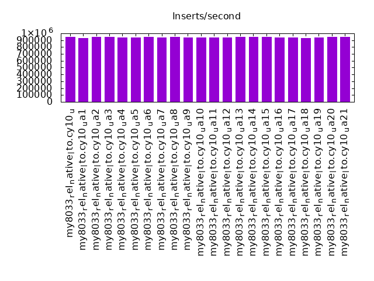
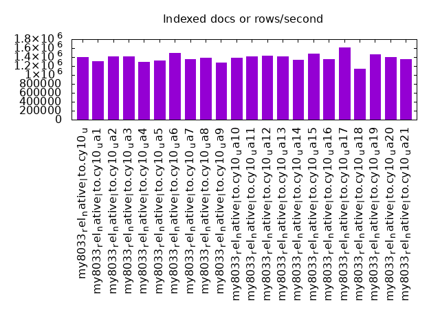
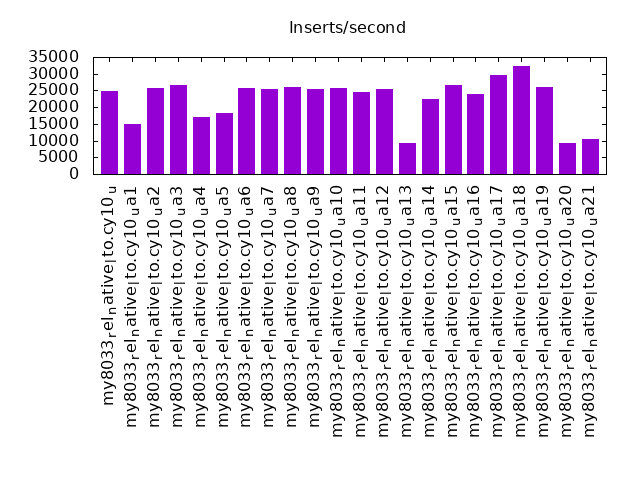
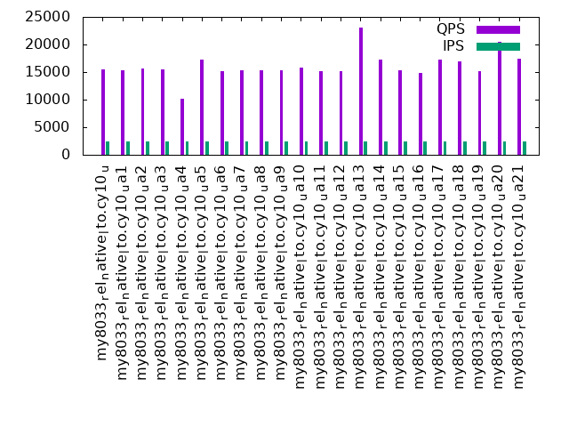
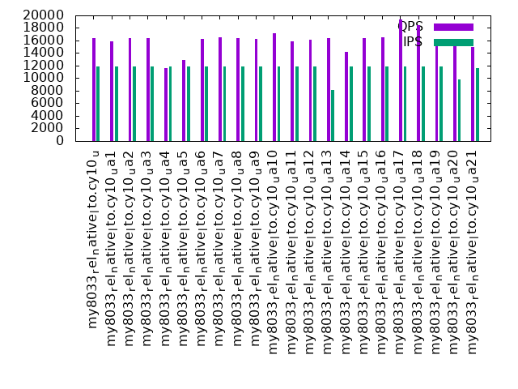
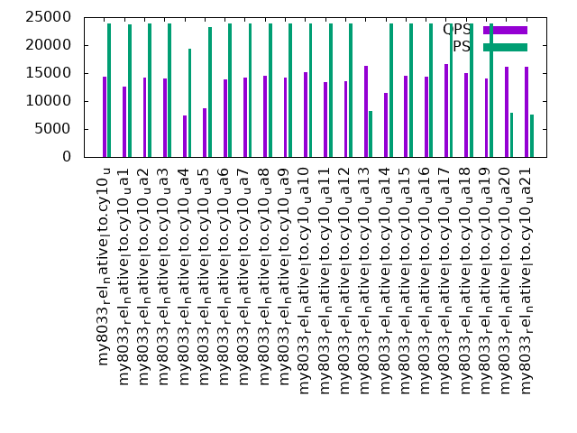

This is a report for the insert benchmark with 12000M docs and 24 client(s). It is generated by scripts (bash, awk, sed) and Tufte might not be impressed. An overview of the insert benchmark is here and a short update is here. Below, by DBMS, I mean DBMS+version.config. An example is my8020.c10b40 where my means MySQL, 8020 is version 8.0.20 and c10b40 is the name for the configuration file.
The test server has 80 cores with hyperthreads enabled, 256G RAM and fast storage. The benchmark was run with 24 clients and there were 1 or 3 connections per client (1 for queries or inserts without rate limits, 1+1 for rate limited inserts+deletes). There are 24 tables, with client per table. It loads 12B rows without secondary indexes, creates secondary indexes, then inserts 120M rows with a delete per insert to avoid growing the table. It then does 3 read+write tests for 1800s each that do queries as fast as possible with 100, 500 and then 1000 inserts/second/client concurrent with the queries and 1000 deletes/second to avoid growing the table. The database is larger than memory.
The tested DBMS are:
The numbers are inserts/s for l.i0 and l.i1, indexed docs (or rows) /s for l.x and queries/s for q*.2. The values are the average rate over the entire test for inserts (IPS) and queries (QPS). The range of values for IPS and QPS is split into 3 parts: bottom 25%, middle 50%, top 25%. Values in the bottom 25% have a red background, values in the top 25% have a green background and values in the middle have no color. A gray background is used for values that can be ignored because the DBMS did not sustain the target insert rate. Red backgrounds are not used when the minimum value is within 80% of the max value.
| dbms | l.i0 | l.x | l.i1 | q100.1 | q500.1 | q1000.1 |
|---|---|---|---|---|---|---|
| my8033_rel_native_lto.cy10_u | 947343 | 1397798 | 24927 | 15422 | 16425 | 14394 |
| my8033_rel_native_lto.cy10_ua1 | 927787 | 1301388 | 14840 | 15361 | 15834 | 12638 |
| my8033_rel_native_lto.cy10_ua2 | 947568 | 1413939 | 25812 | 15694 | 16443 | 14258 |
| my8033_rel_native_lto.cy10_ua3 | 944807 | 1413106 | 26649 | 15476 | 16324 | 14102 |
| my8033_rel_native_lto.cy10_ua4 | 942137 | 1297589 | 17136 | 10113 | 11576 | 7437 |
| my8033_rel_native_lto.cy10_ua5 | 942211 | 1329946 | 18127 | 17247 | 12917 | 8635 |
| my8033_rel_native_lto.cy10_ua6 | 946671 | 1484977 | 25718 | 15171 | 16285 | 13901 |
| my8033_rel_native_lto.cy10_ua7 | 944436 | 1361327 | 25429 | 15355 | 16478 | 14141 |
| my8033_rel_native_lto.cy10_ua8 | 945105 | 1382500 | 26059 | 15245 | 16361 | 14521 |
| my8033_rel_native_lto.cy10_ua9 | 944287 | 1272680 | 25559 | 15284 | 16289 | 14186 |
| my8033_rel_native_lto.cy10_ua10 | 943544 | 1382978 | 25768 | 15799 | 17143 | 15091 |
| my8033_rel_native_lto.cy10_ua11 | 940808 | 1422150 | 24565 | 15135 | 15892 | 13457 |
| my8033_rel_native_lto.cy10_ua12 | 944064 | 1429604 | 25575 | 15160 | 16107 | 13625 |
| my8033_rel_native_lto.cy10_ua13 | 947044 | 1419290 | 9412 | 23074 | 16429 | 16326 |
| my8033_rel_native_lto.cy10_ua14 | 945180 | 1343947 | 22422 | 17264 | 14177 | 11511 |
| my8033_rel_native_lto.cy10_ua15 | 947269 | 1484610 | 26678 | 15323 | 16422 | 14450 |
| my8033_rel_native_lto.cy10_ua16 | 941915 | 1356250 | 23995 | 14840 | 16522 | 14330 |
| my8033_rel_native_lto.cy10_ua17 | 937940 | 1612917 | 29681 | 17267 | 19309 | 16655 |
| my8033_rel_native_lto.cy10_ua18 | 931822 | 1138097 | 32232 | 16869 | 18390 | 15034 |
| my8033_rel_native_lto.cy10_ua19 | 939482 | 1462179 | 25940 | 15124 | 16310 | 14043 |
| my8033_rel_native_lto.cy10_ua20 | 945105 | 1392446 | 9224 | 20497 | 15696 | 16192 |
| my8033_rel_native_lto.cy10_ua21 | 946148 | 1353955 | 10614 | 17416 | 15000 | 16151 |
This table has relative throughput, throughput for the DBMS relative to the DBMS in the first line, using the absolute throughput from the previous table. Values less than 0.95 have a yellow background. Values greater than 1.05 have a blue background.
| dbms | l.i0 | l.x | l.i1 | q100.1 | q500.1 | q1000.1 |
|---|---|---|---|---|---|---|
| my8033_rel_native_lto.cy10_u | 1.00 | 1.00 | 1.00 | 1.00 | 1.00 | 1.00 |
| my8033_rel_native_lto.cy10_ua1 | 0.98 | 0.93 | 0.60 | 1.00 | 0.96 | 0.88 |
| my8033_rel_native_lto.cy10_ua2 | 1.00 | 1.01 | 1.04 | 1.02 | 1.00 | 0.99 |
| my8033_rel_native_lto.cy10_ua3 | 1.00 | 1.01 | 1.07 | 1.00 | 0.99 | 0.98 |
| my8033_rel_native_lto.cy10_ua4 | 0.99 | 0.93 | 0.69 | 0.66 | 0.70 | 0.52 |
| my8033_rel_native_lto.cy10_ua5 | 0.99 | 0.95 | 0.73 | 1.12 | 0.79 | 0.60 |
| my8033_rel_native_lto.cy10_ua6 | 1.00 | 1.06 | 1.03 | 0.98 | 0.99 | 0.97 |
| my8033_rel_native_lto.cy10_ua7 | 1.00 | 0.97 | 1.02 | 1.00 | 1.00 | 0.98 |
| my8033_rel_native_lto.cy10_ua8 | 1.00 | 0.99 | 1.05 | 0.99 | 1.00 | 1.01 |
| my8033_rel_native_lto.cy10_ua9 | 1.00 | 0.91 | 1.03 | 0.99 | 0.99 | 0.99 |
| my8033_rel_native_lto.cy10_ua10 | 1.00 | 0.99 | 1.03 | 1.02 | 1.04 | 1.05 |
| my8033_rel_native_lto.cy10_ua11 | 0.99 | 1.02 | 0.99 | 0.98 | 0.97 | 0.93 |
| my8033_rel_native_lto.cy10_ua12 | 1.00 | 1.02 | 1.03 | 0.98 | 0.98 | 0.95 |
| my8033_rel_native_lto.cy10_ua13 | 1.00 | 1.02 | 0.38 | 1.50 | 1.00 | 1.13 |
| my8033_rel_native_lto.cy10_ua14 | 1.00 | 0.96 | 0.90 | 1.12 | 0.86 | 0.80 |
| my8033_rel_native_lto.cy10_ua15 | 1.00 | 1.06 | 1.07 | 0.99 | 1.00 | 1.00 |
| my8033_rel_native_lto.cy10_ua16 | 0.99 | 0.97 | 0.96 | 0.96 | 1.01 | 1.00 |
| my8033_rel_native_lto.cy10_ua17 | 0.99 | 1.15 | 1.19 | 1.12 | 1.18 | 1.16 |
| my8033_rel_native_lto.cy10_ua18 | 0.98 | 0.81 | 1.29 | 1.09 | 1.12 | 1.04 |
| my8033_rel_native_lto.cy10_ua19 | 0.99 | 1.05 | 1.04 | 0.98 | 0.99 | 0.98 |
| my8033_rel_native_lto.cy10_ua20 | 1.00 | 1.00 | 0.37 | 1.33 | 0.96 | 1.12 |
| my8033_rel_native_lto.cy10_ua21 | 1.00 | 0.97 | 0.43 | 1.13 | 0.91 | 1.12 |
This lists the average rate of inserts/s for the tests that do inserts concurrent with queries. For such tests the query rate is listed in the table above. The read+write tests are setup so that the insert rate should match the target rate every second. Cells that are not at least 95% of the target have a red background to indicate a failure to satisfy the target.
| dbms | q100.1 | q500.1 | q1000.1 |
|---|---|---|---|
| my8033_rel_native_lto.cy10_u | 2381 | 11911 | 23828 |
| my8033_rel_native_lto.cy10_ua1 | 2380 | 11901 | 23769 |
| my8033_rel_native_lto.cy10_ua2 | 2381 | 11907 | 23821 |
| my8033_rel_native_lto.cy10_ua3 | 2381 | 11911 | 23821 |
| my8033_rel_native_lto.cy10_ua4 | 2380 | 11907 | 19299 |
| my8033_rel_native_lto.cy10_ua5 | 2381 | 11907 | 23213 |
| my8033_rel_native_lto.cy10_ua6 | 2381 | 11911 | 23828 |
| my8033_rel_native_lto.cy10_ua7 | 2380 | 11911 | 23828 |
| my8033_rel_native_lto.cy10_ua8 | 2381 | 11911 | 23821 |
| my8033_rel_native_lto.cy10_ua9 | 2381 | 11907 | 23821 |
| my8033_rel_native_lto.cy10_ua10 | 2381 | 11907 | 23828 |
| my8033_rel_native_lto.cy10_ua11 | 2381 | 11907 | 23821 |
| my8033_rel_native_lto.cy10_ua12 | 2381 | 11911 | 23828 |
| my8033_rel_native_lto.cy10_ua13 | 2381 | 8082 | 8237 |
| my8033_rel_native_lto.cy10_ua14 | 2381 | 11907 | 23821 |
| my8033_rel_native_lto.cy10_ua15 | 2381 | 11911 | 23828 |
| my8033_rel_native_lto.cy10_ua16 | 2381 | 11911 | 23828 |
| my8033_rel_native_lto.cy10_ua17 | 2381 | 11907 | 23821 |
| my8033_rel_native_lto.cy10_ua18 | 2381 | 11904 | 23821 |
| my8033_rel_native_lto.cy10_ua19 | 2381 | 11907 | 23821 |
| my8033_rel_native_lto.cy10_ua20 | 2381 | 9794 | 7914 |
| my8033_rel_native_lto.cy10_ua21 | 2381 | 11660 | 7641 |
| target | 2400 | 12000 | 24000 |
l.i0: load without secondary indexes. Graphs for performance per 1-second interval are here.
Average throughput:
Insert response time histogram: each cell has the percentage of responses that take <= the time in the header and max is the max response time in seconds. For the max column values in the top 25% of the range have a red background and in the bottom 25% of the range have a green background. The red background is not used when the min value is within 80% of the max value.
| dbms | 256us | 1ms | 4ms | 16ms | 64ms | 256ms | 1s | 4s | 16s | gt | max |
|---|---|---|---|---|---|---|---|---|---|---|---|
| my8033_rel_native_lto.cy10_u | 99.876 | 0.077 | 0.015 | 0.031 | 0.130 | ||||||
| my8033_rel_native_lto.cy10_ua1 | 99.857 | 0.096 | 0.015 | 0.032 | nonzero | 0.321 | |||||
| my8033_rel_native_lto.cy10_ua2 | 99.878 | 0.076 | 0.014 | 0.032 | 0.132 | ||||||
| my8033_rel_native_lto.cy10_ua3 | 99.876 | 0.076 | 0.015 | 0.033 | 0.251 | ||||||
| my8033_rel_native_lto.cy10_ua4 | 99.739 | 0.215 | 0.016 | 0.031 | 0.244 | ||||||
| my8033_rel_native_lto.cy10_ua5 | 99.870 | 0.083 | 0.011 | 0.036 | nonzero | 0.299 | |||||
| my8033_rel_native_lto.cy10_ua6 | 99.896 | 0.058 | 0.015 | 0.031 | nonzero | 0.351 | |||||
| my8033_rel_native_lto.cy10_ua7 | 99.882 | 0.071 | 0.013 | 0.034 | nonzero | 0.256 | |||||
| my8033_rel_native_lto.cy10_ua8 | 99.882 | 0.071 | 0.015 | 0.033 | nonzero | 0.365 | |||||
| my8033_rel_native_lto.cy10_ua9 | 99.875 | 0.079 | 0.016 | 0.030 | nonzero | 0.393 | |||||
| my8033_rel_native_lto.cy10_ua10 | 99.859 | 0.094 | 0.011 | 0.036 | nonzero | nonzero | 2.069 | ||||
| my8033_rel_native_lto.cy10_ua11 | 99.848 | 0.083 | 0.033 | 0.036 | nonzero | 0.307 | |||||
| my8033_rel_native_lto.cy10_ua12 | 99.851 | 0.092 | 0.020 | 0.037 | nonzero | 0.329 | |||||
| my8033_rel_native_lto.cy10_ua13 | 99.880 | 0.074 | 0.013 | 0.033 | nonzero | 0.348 | |||||
| my8033_rel_native_lto.cy10_ua14 | 99.878 | 0.075 | 0.013 | 0.034 | nonzero | 0.317 | |||||
| my8033_rel_native_lto.cy10_ua15 | 99.891 | 0.062 | 0.014 | 0.032 | nonzero | 0.318 | |||||
| my8033_rel_native_lto.cy10_ua16 | 99.876 | 0.077 | 0.014 | 0.033 | nonzero | 0.314 | |||||
| my8033_rel_native_lto.cy10_ua17 | 99.882 | 0.071 | 0.016 | 0.031 | nonzero | 0.323 | |||||
| my8033_rel_native_lto.cy10_ua18 | 99.874 | 0.079 | 0.016 | 0.031 | nonzero | 0.378 | |||||
| my8033_rel_native_lto.cy10_ua19 | 99.873 | 0.080 | 0.013 | 0.034 | nonzero | 0.391 | |||||
| my8033_rel_native_lto.cy10_ua20 | 99.879 | 0.075 | 0.015 | 0.032 | 0.165 | ||||||
| my8033_rel_native_lto.cy10_ua21 | 99.882 | 0.071 | 0.016 | 0.031 | nonzero | 0.325 |
Performance metrics for the DBMS listed above. Some are normalized by throughput, others are not. Legend for results is here.
ips qps rps rmbps wps wmbps rpq rkbpq wpi wkbpi csps cpups cspq cpupq dbgb1 dbgb2 rss maxop p50 p99 tag 947343 0 2 0.0 6399.4 275.2 0.000 0.000 0.007 0.297 236360 54.0 0.249 46 786.4 914.9 216.2 0.130 39460 33966 12000m.my8033_rel_native_lto.cy10_u 927787 0 2 0.0 6265.2 269.6 0.000 0.000 0.007 0.298 273095 53.7 0.294 46 786.4 914.9 216.2 0.321 38661 33467 12000m.my8033_rel_native_lto.cy10_ua1 947568 0 2 0.0 6416.6 275.8 0.000 0.000 0.007 0.298 236099 54.0 0.249 46 786.3 914.9 216.2 0.132 39461 33966 12000m.my8033_rel_native_lto.cy10_ua2 944807 0 2 0.0 6398.8 274.9 0.000 0.000 0.007 0.298 236399 54.0 0.250 46 786.3 914.9 216.2 0.251 39361 33966 12000m.my8033_rel_native_lto.cy10_ua3 942137 0 3 0.1 3911.2 252.6 0.000 0.000 0.004 0.275 248267 54.3 0.264 46 786.4 914.9 216.2 0.244 39361 34066 12000m.my8033_rel_native_lto.cy10_ua4 942211 0 2 0.0 6362.8 273.5 0.000 0.000 0.007 0.297 238299 53.8 0.253 46 786.4 914.9 216.1 0.299 39161 33767 12000m.my8033_rel_native_lto.cy10_ua5 946671 0 2 0.0 6397.3 275.2 0.000 0.000 0.007 0.298 238165 53.8 0.252 45 786.4 914.9 216.2 0.351 39461 34366 12000m.my8033_rel_native_lto.cy10_ua6 944436 0 2 0.0 6372.1 274.1 0.000 0.000 0.007 0.297 238413 53.9 0.252 46 786.4 914.9 216.1 0.256 39460 34264 12000m.my8033_rel_native_lto.cy10_ua7 945105 0 2 0.0 6380.3 274.6 0.000 0.000 0.007 0.298 234890 53.9 0.249 46 786.4 914.9 215.8 0.365 39360 33966 12000m.my8033_rel_native_lto.cy10_ua8 944287 0 2 0.0 6378.6 274.2 0.000 0.000 0.007 0.297 240352 53.9 0.255 46 786.4 914.9 215.3 0.393 39361 34066 12000m.my8033_rel_native_lto.cy10_ua9 943544 0 4 0.1 6369.7 273.6 0.000 0.000 0.007 0.297 247076 53.9 0.262 46 786.4 914.9 216.2 2.069 39261 33766 12000m.my8033_rel_native_lto.cy10_ua10 940808 0 2 0.0 6446.4 275.8 0.000 0.000 0.007 0.300 229808 53.5 0.244 45 786.4 802.9 216.2 0.307 39261 33766 12000m.my8033_rel_native_lto.cy10_ua11 944064 0 2 0.0 6442.2 275.8 0.000 0.000 0.007 0.299 239512 53.8 0.254 46 786.4 818.9 216.2 0.329 39161 33666 12000m.my8033_rel_native_lto.cy10_ua12 947044 0 2 0.0 6393.8 275.2 0.000 0.000 0.007 0.298 235790 53.9 0.249 46 786.4 914.9 216.2 0.348 39761 34166 12000m.my8033_rel_native_lto.cy10_ua13 945180 0 2 0.0 6378.0 274.6 0.000 0.000 0.007 0.297 235169 53.9 0.249 46 786.4 915.0 216.2 0.317 39360 33966 12000m.my8033_rel_native_lto.cy10_ua14 947269 0 2 0.0 6393.3 275.0 0.000 0.000 0.007 0.297 234856 53.9 0.248 46 786.4 915.0 216.2 0.318 39361 33966 12000m.my8033_rel_native_lto.cy10_ua15 941915 0 2 0.1 6190.8 268.7 0.000 0.000 0.007 0.292 237652 54.1 0.252 46 786.4 914.9 216.2 0.314 39261 33766 12000m.my8033_rel_native_lto.cy10_ua16 937940 0 2 0.0 5840.0 211.4 0.000 0.000 0.006 0.231 229791 53.8 0.245 46 786.4 914.9 216.2 0.323 39061 33667 12000m.my8033_rel_native_lto.cy10_ua17 931822 0 11 0.3 6293.7 269.2 0.000 0.000 0.007 0.296 231381 53.7 0.248 46 786.4 914.9 216.2 0.378 38562 33566 12000m.my8033_rel_native_lto.cy10_ua18 939482 0 2 0.0 6354.8 273.2 0.000 0.000 0.007 0.298 235119 53.6 0.250 46 786.3 914.9 216.2 0.391 38661 32967 12000m.my8033_rel_native_lto.cy10_ua19 945105 0 2 0.0 6381.6 274.7 0.000 0.000 0.007 0.298 237765 54.1 0.252 46 786.4 915.0 216.2 0.165 39160 33966 12000m.my8033_rel_native_lto.cy10_ua20 946148 0 2 0.0 6392.8 275.1 0.000 0.000 0.007 0.298 239165 54.0 0.253 46 786.4 914.9 216.2 0.325 39261 33767 12000m.my8033_rel_native_lto.cy10_ua21
l.x: create secondary indexes.
Average throughput:
Performance metrics for the DBMS listed above. Some are normalized by throughput, others are not. Legend for results is here.
ips qps rps rmbps wps wmbps rpq rkbpq wpi wkbpi csps cpups cspq cpupq dbgb1 dbgb2 rss maxop p50 p99 tag 1397798 0 25061 1345.5 29395.6 1258.1 0.018 0.986 0.021 0.922 167911 71.4 0.120 41 1758.4 1887.0 216.5 0.018 NA NA 12000m.my8033_rel_native_lto.cy10_u 1301388 0 23360 1242.9 27099.7 1171.4 0.018 0.978 0.021 0.922 184895 69.1 0.142 42 1758.4 1887.0 216.5 0.010 NA NA 12000m.my8033_rel_native_lto.cy10_ua1 1413939 0 25362 1361.5 29240.0 1272.0 0.018 0.986 0.021 0.921 169837 72.3 0.120 41 1758.4 1887.0 216.5 0.008 NA NA 12000m.my8033_rel_native_lto.cy10_ua2 1413106 0 25327 1360.3 29395.2 1271.3 0.018 0.986 0.021 0.921 167012 70.2 0.118 40 1758.4 1887.0 216.5 0.013 NA NA 12000m.my8033_rel_native_lto.cy10_ua3 1297589 0 19296 1228.2 27902.0 1149.1 0.015 0.969 0.022 0.907 216041 68.9 0.166 42 1758.4 1887.0 216.5 0.011 NA NA 12000m.my8033_rel_native_lto.cy10_ua4 1329946 0 25251 1380.8 27865.3 1197.4 0.019 1.063 0.021 0.922 178012 68.2 0.134 41 1758.4 1887.0 216.4 0.009 NA NA 12000m.my8033_rel_native_lto.cy10_ua5 1484977 0 26596 1430.6 31032.6 1336.5 0.018 0.987 0.021 0.922 169626 72.7 0.114 39 1758.4 1887.0 216.4 0.011 NA NA 12000m.my8033_rel_native_lto.cy10_ua6 1361327 0 24428 1309.1 28433.2 1225.4 0.018 0.985 0.021 0.922 168577 69.9 0.124 41 1758.4 1887.0 216.5 0.013 NA NA 12000m.my8033_rel_native_lto.cy10_ua7 1382500 0 24808 1331.9 29260.2 1244.4 0.018 0.987 0.021 0.922 161143 70.5 0.117 41 1758.4 1887.0 216.5 0.010 NA NA 12000m.my8033_rel_native_lto.cy10_ua8 1272680 0 23828 1293.5 26937.6 1145.7 0.019 1.041 0.021 0.922 169168 65.4 0.133 41 1758.4 1887.0 216.5 0.016 NA NA 12000m.my8033_rel_native_lto.cy10_ua9 1382978 0 24618 1320.8 29071.9 1244.9 0.018 0.978 0.021 0.922 177328 71.2 0.128 41 1758.4 1887.0 216.5 0.009 NA NA 12000m.my8033_rel_native_lto.cy10_ua10 1422150 0 25411 1364.1 29796.3 1276.8 0.018 0.982 0.021 0.919 167218 70.7 0.118 40 1758.4 1775.0 216.5 0.006 NA NA 12000m.my8033_rel_native_lto.cy10_ua11 1429604 0 26994 1478.1 29784.6 1284.5 0.019 1.059 0.021 0.920 183052 72.3 0.128 40 1758.4 1791.0 216.5 0.007 NA NA 12000m.my8033_rel_native_lto.cy10_ua12 1419290 0 25452 1367.2 29312.9 1277.4 0.018 0.986 0.021 0.922 165208 73.3 0.116 41 1758.4 1887.0 216.5 0.011 NA NA 12000m.my8033_rel_native_lto.cy10_ua13 1343947 0 24066 1289.0 28200.0 1209.5 0.018 0.982 0.021 0.922 160328 70.6 0.119 42 1758.4 1887.0 216.5 0.008 NA NA 12000m.my8033_rel_native_lto.cy10_ua14 1484610 0 26480 1420.0 31098.1 1335.0 0.018 0.979 0.021 0.921 165303 75.9 0.111 41 1758.4 1887.0 216.5 0.018 NA NA 12000m.my8033_rel_native_lto.cy10_ua15 1356250 0 24204 1295.6 28778.5 1227.5 0.018 0.978 0.021 0.927 159011 71.1 0.117 42 1758.4 1887.0 216.5 0.013 NA NA 12000m.my8033_rel_native_lto.cy10_ua16 1612917 0 28916 1552.7 29211.0 1334.3 0.018 0.986 0.018 0.847 168379 79.5 0.104 39 1758.4 1886.9 216.5 0.010 NA NA 12000m.my8033_rel_native_lto.cy10_ua17 1138097 0 20474 1097.7 23225.6 1024.2 0.018 0.988 0.020 0.922 134290 61.5 0.118 43 1758.4 1887.0 216.5 0.014 NA NA 12000m.my8033_rel_native_lto.cy10_ua18 1462179 0 26214 1405.1 30108.3 1315.8 0.018 0.984 0.021 0.921 168401 74.6 0.115 41 1758.4 1887.0 216.5 0.011 NA NA 12000m.my8033_rel_native_lto.cy10_ua19 1392446 0 24958 1338.8 29071.1 1253.5 0.018 0.985 0.021 0.922 167247 72.6 0.120 42 1758.4 1887.0 216.5 0.009 NA NA 12000m.my8033_rel_native_lto.cy10_ua20 1353955 0 24295 1305.5 28235.0 1218.8 0.018 0.987 0.021 0.922 165225 71.4 0.122 42 1758.4 1887.0 216.5 0.014 NA NA 12000m.my8033_rel_native_lto.cy10_ua21
l.i1: continue load after secondary indexes created. Graphs for performance per 1-second interval are here.
Average throughput:
Insert response time histogram: each cell has the percentage of responses that take <= the time in the header and max is the max response time in seconds. For the max column values in the top 25% of the range have a red background and in the bottom 25% of the range have a green background. The red background is not used when the min value is within 80% of the max value.
| dbms | 256us | 1ms | 4ms | 16ms | 64ms | 256ms | 1s | 4s | 16s | gt | max |
|---|---|---|---|---|---|---|---|---|---|---|---|
| my8033_rel_native_lto.cy10_u | 1.934 | 82.092 | 15.545 | 0.429 | 0.864 | ||||||
| my8033_rel_native_lto.cy10_ua1 | 1.215 | 61.323 | 32.732 | 4.730 | 0.699 | ||||||
| my8033_rel_native_lto.cy10_ua2 | 3.209 | 82.680 | 13.854 | 0.257 | 0.777 | ||||||
| my8033_rel_native_lto.cy10_ua3 | 2.592 | 83.142 | 14.045 | 0.221 | 0.905 | ||||||
| my8033_rel_native_lto.cy10_ua4 | 2.405 | 66.980 | 28.339 | 2.268 | 0.009 | 1.628 | |||||
| my8033_rel_native_lto.cy10_ua5 | 0.038 | 65.676 | 33.887 | 0.398 | 0.001 | 1.344 | |||||
| my8033_rel_native_lto.cy10_ua6 | 1.566 | 85.284 | 12.831 | 0.319 | 0.806 | ||||||
| my8033_rel_native_lto.cy10_ua7 | 2.915 | 83.810 | 13.005 | 0.270 | 0.729 | ||||||
| my8033_rel_native_lto.cy10_ua8 | 1.145 | 85.961 | 12.697 | 0.197 | 0.818 | ||||||
| my8033_rel_native_lto.cy10_ua9 | 1.716 | 85.419 | 12.644 | 0.221 | 0.751 | ||||||
| my8033_rel_native_lto.cy10_ua10 | 2.010 | 85.098 | 12.618 | 0.274 | 0.724 | ||||||
| my8033_rel_native_lto.cy10_ua11 | 2.004 | 81.499 | 16.263 | 0.234 | 0.720 | ||||||
| my8033_rel_native_lto.cy10_ua12 | 1.972 | 82.865 | 14.942 | 0.222 | nonzero | 1.022 | |||||
| my8033_rel_native_lto.cy10_ua13 | 0.052 | 33.919 | 56.526 | 9.503 | 0.846 | ||||||
| my8033_rel_native_lto.cy10_ua14 | nonzero | 42.043 | 39.259 | 18.259 | 0.438 | 0.001 | 1.263 | ||||
| my8033_rel_native_lto.cy10_ua15 | 2.167 | 84.715 | 12.937 | 0.181 | 0.863 | ||||||
| my8033_rel_native_lto.cy10_ua16 | 1.198 | 86.539 | 11.967 | 0.296 | 0.776 | ||||||
| my8033_rel_native_lto.cy10_ua17 | 1.349 | 88.283 | 10.333 | 0.034 | 0.440 | ||||||
| my8033_rel_native_lto.cy10_ua18 | 25.693 | 62.556 | 11.256 | 0.317 | 0.179 | nonzero | 4.099 | ||||
| my8033_rel_native_lto.cy10_ua19 | 2.308 | 84.522 | 12.850 | 0.320 | 0.883 | ||||||
| my8033_rel_native_lto.cy10_ua20 | 3.026 | 96.598 | 0.377 | 0.848 | |||||||
| my8033_rel_native_lto.cy10_ua21 | 0.002 | 18.189 | 81.432 | 0.377 | 0.831 |
Delete response time histogram: each cell has the percentage of responses that take <= the time in the header and max is the max response time in seconds. For the max column values in the top 25% of the range have a red background and in the bottom 25% of the range have a green background. The red background is not used when the min value is within 80% of the max value.
| dbms | 256us | 1ms | 4ms | 16ms | 64ms | 256ms | 1s | 4s | 16s | gt | max |
|---|---|---|---|---|---|---|---|---|---|---|---|
| my8033_rel_native_lto.cy10_u | 0.907 | 46.317 | 52.396 | 0.379 | 0.001 | 0.508 | |||||
| my8033_rel_native_lto.cy10_ua1 | 1.092 | 46.393 | 52.148 | 0.368 | nonzero | 0.269 | |||||
| my8033_rel_native_lto.cy10_ua2 | 0.738 | 46.481 | 52.254 | 0.527 | nonzero | 0.416 | |||||
| my8033_rel_native_lto.cy10_ua3 | 0.675 | 46.952 | 51.847 | 0.525 | nonzero | 0.325 | |||||
| my8033_rel_native_lto.cy10_ua4 | 0.612 | 49.032 | 49.910 | 0.445 | 0.001 | 0.411 | |||||
| my8033_rel_native_lto.cy10_ua5 | 0.054 | 95.458 | 4.448 | 0.039 | 0.822 | ||||||
| my8033_rel_native_lto.cy10_ua6 | 0.707 | 44.145 | 54.780 | 0.367 | nonzero | 0.359 | |||||
| my8033_rel_native_lto.cy10_ua7 | 0.704 | 44.887 | 54.059 | 0.350 | nonzero | 0.327 | |||||
| my8033_rel_native_lto.cy10_ua8 | 0.700 | 43.395 | 55.524 | 0.381 | nonzero | 0.393 | |||||
| my8033_rel_native_lto.cy10_ua9 | 0.729 | 46.422 | 52.527 | 0.321 | 0.241 | ||||||
| my8033_rel_native_lto.cy10_ua10 | 0.697 | 45.464 | 53.501 | 0.337 | nonzero | 0.316 | |||||
| my8033_rel_native_lto.cy10_ua11 | 0.695 | 44.944 | 53.957 | 0.353 | 0.052 | 0.618 | |||||
| my8033_rel_native_lto.cy10_ua12 | 0.619 | 44.803 | 54.223 | 0.354 | nonzero | 0.421 | |||||
| my8033_rel_native_lto.cy10_ua13 | 0.572 | 38.625 | 11.486 | 46.572 | 2.745 | 0.349 | |||||
| my8033_rel_native_lto.cy10_ua14 | 0.354 | 94.134 | 5.473 | 0.039 | 0.944 | ||||||
| my8033_rel_native_lto.cy10_ua15 | 0.675 | 46.341 | 52.640 | 0.343 | nonzero | 0.417 | |||||
| my8033_rel_native_lto.cy10_ua16 | 0.631 | 43.880 | 55.399 | 0.090 | nonzero | 0.401 | |||||
| my8033_rel_native_lto.cy10_ua17 | 0.356 | 41.858 | 57.091 | 0.695 | 0.253 | ||||||
| my8033_rel_native_lto.cy10_ua18 | 0.536 | 75.379 | 23.717 | 0.320 | 0.047 | nonzero | 1.208 | ||||
| my8033_rel_native_lto.cy10_ua19 | 0.614 | 45.069 | 53.974 | 0.343 | nonzero | 0.266 | |||||
| my8033_rel_native_lto.cy10_ua20 | 0.717 | 13.006 | 6.153 | 80.123 | 0.001 | 0.521 | |||||
| my8033_rel_native_lto.cy10_ua21 | 0.771 | 25.847 | 5.515 | 67.867 | nonzero | 0.281 |
Performance metrics for the DBMS listed above. Some are normalized by throughput, others are not. Legend for results is here.
ips qps rps rmbps wps wmbps rpq rkbpq wpi wkbpi csps cpups cspq cpupq dbgb1 dbgb2 rss maxop p50 p99 tag 24927 0 43900 686.0 72322.3 2023.8 1.761 28.179 2.901 83.135 1038501 40.6 41.661 1303 2406.8 2599.1 216.5 0.864 1249 150 12000m.my8033_rel_native_lto.cy10_u 14840 0 28082 438.8 49435.6 1303.0 1.892 30.277 3.331 89.908 1521196 42.4 102.504 2286 2406.3 2596.4 216.5 0.699 450 100 12000m.my8033_rel_native_lto.cy10_ua1 25812 0 45928 717.6 78207.1 2197.0 1.779 28.470 3.030 87.159 1014027 41.9 39.285 1299 2408.0 2596.8 216.5 0.777 1349 200 12000m.my8033_rel_native_lto.cy10_ua2 26649 0 47055 735.2 79980.9 2249.0 1.766 28.252 3.001 86.418 1019230 43.2 38.247 1297 2407.3 2596.8 216.5 0.905 1349 200 12000m.my8033_rel_native_lto.cy10_ua3 17136 0 33748 868.7 74581.7 1407.0 1.969 51.910 4.352 84.082 1125824 33.9 65.701 1583 2408.3 2599.8 216.5 1.628 500 50 12000m.my8033_rel_native_lto.cy10_ua4 18127 0 93310 1458.0 136402.8 3388.1 5.148 82.362 7.525 191.397 708828 24.3 39.104 1072 2400.2 2536.6 216.4 1.344 849 150 12000m.my8033_rel_native_lto.cy10_ua5 25718 0 45118 705.0 75456.5 2140.9 1.754 28.070 2.934 85.244 1116275 42.7 43.405 1328 2406.9 2599.2 216.4 0.806 1249 200 12000m.my8033_rel_native_lto.cy10_ua6 25429 0 44813 700.2 71477.4 2057.6 1.762 28.197 2.811 82.857 1076707 42.2 42.342 1328 2407.3 2599.6 216.4 0.729 1149 200 12000m.my8033_rel_native_lto.cy10_ua7 26059 0 45560 711.9 72059.8 2089.7 1.748 27.974 2.765 82.116 1107355 43.0 42.495 1320 2407.2 2600.1 216.4 0.818 1399 250 12000m.my8033_rel_native_lto.cy10_ua8 25559 0 45183 706.0 71160.4 2057.0 1.768 28.285 2.784 82.410 1117701 42.4 43.730 1327 2406.0 2598.2 216.4 0.751 1349 250 12000m.my8033_rel_native_lto.cy10_ua9 25768 0 45474 710.5 70940.1 2094.9 1.765 28.237 2.753 83.249 1170452 43.1 45.423 1338 2406.7 2598.4 216.5 0.724 1449 250 12000m.my8033_rel_native_lto.cy10_ua10 24565 0 42857 669.6 98422.2 2675.8 1.745 27.914 4.007 111.542 1061324 40.9 43.205 1332 2407.6 2488.1 216.5 0.720 1199 300 12000m.my8033_rel_native_lto.cy10_ua11 25575 0 44648 697.6 88457.1 2402.1 1.746 27.932 3.459 96.177 1082012 42.4 42.307 1326 2407.1 2503.6 216.5 1.022 1199 200 12000m.my8033_rel_native_lto.cy10_ua12 9412 0 51388 802.9 73099.0 2036.6 5.460 87.354 7.766 221.563 504995 20.8 53.652 1768 2122.2 2255.5 216.5 0.846 250 150 12000m.my8033_rel_native_lto.cy10_ua13 22422 0 83710 1308.0 122038.0 3181.7 3.733 59.736 5.443 145.311 709982 29.3 31.665 1045 2405.7 2549.2 216.5 1.263 1099 150 12000m.my8033_rel_native_lto.cy10_ua14 26678 0 46948 733.6 75666.2 2160.6 1.760 28.157 2.836 82.932 1125305 43.7 42.180 1310 2406.5 2598.9 216.5 0.863 1399 200 12000m.my8033_rel_native_lto.cy10_ua15 23995 0 42625 666.0 63969.5 1861.0 1.776 28.423 2.666 79.418 1138515 40.6 47.448 1354 2405.7 2602.3 216.4 0.776 1149 200 12000m.my8033_rel_native_lto.cy10_ua16 29681 0 51852 810.2 70792.6 1336.2 1.747 27.952 2.385 46.098 1286738 48.3 43.352 1302 2406.1 2599.6 216.4 0.440 1449 400 12000m.my8033_rel_native_lto.cy10_ua17 32232 0 42815 669.0 75627.3 2092.2 1.328 21.254 2.346 66.468 461031 37.9 14.304 941 2418.3 2617.9 216.6 4.099 999 0 12000m.my8033_rel_native_lto.cy10_ua18 25940 0 45526 711.4 76353.3 2161.7 1.755 28.081 2.943 85.332 1102951 42.7 42.519 1317 2406.8 2599.2 216.5 0.883 1249 200 12000m.my8033_rel_native_lto.cy10_ua19 9224 0 48521 758.2 68623.0 1916.0 5.260 84.164 7.439 212.699 489521 21.2 53.069 1839 2173.5 2313.7 216.5 0.848 350 250 12000m.my8033_rel_native_lto.cy10_ua20 10614 0 46618 728.4 67155.1 1882.4 4.392 70.277 6.327 181.610 496346 22.3 46.764 1681 2295.9 2444.5 216.5 0.831 400 250 12000m.my8033_rel_native_lto.cy10_ua21
q100.1: range queries with 100 insert/s per client. Graphs for performance per 1-second interval are here.
Average throughput:
Query response time histogram: each cell has the percentage of responses that take <= the time in the header and max is the max response time in seconds. For max values in the top 25% of the range have a red background and in the bottom 25% of the range have a green background. The red background is not used when the min value is within 80% of the max value.
| dbms | 256us | 1ms | 4ms | 16ms | 64ms | 256ms | 1s | 4s | 16s | gt | max |
|---|---|---|---|---|---|---|---|---|---|---|---|
| my8033_rel_native_lto.cy10_u | 15.044 | 29.765 | 48.100 | 6.609 | 0.466 | 0.014 | nonzero | 0.324 | |||
| my8033_rel_native_lto.cy10_ua1 | 13.408 | 31.150 | 51.043 | 3.840 | 0.549 | 0.010 | nonzero | 0.312 | |||
| my8033_rel_native_lto.cy10_ua2 | 14.979 | 29.879 | 48.239 | 6.495 | 0.393 | 0.015 | nonzero | 0.373 | |||
| my8033_rel_native_lto.cy10_ua3 | 14.803 | 29.994 | 48.155 | 6.601 | 0.429 | 0.018 | nonzero | 0.396 | |||
| my8033_rel_native_lto.cy10_ua4 | 8.836 | 32.331 | 47.566 | 9.812 | 1.361 | 0.094 | nonzero | 0.331 | |||
| my8033_rel_native_lto.cy10_ua5 | 14.728 | 29.276 | 50.019 | 5.977 | 0.001 | 0.041 | |||||
| my8033_rel_native_lto.cy10_ua6 | 15.034 | 29.654 | 47.886 | 6.931 | 0.478 | 0.017 | nonzero | 0.395 | |||
| my8033_rel_native_lto.cy10_ua7 | 15.479 | 29.408 | 47.787 | 6.835 | 0.473 | 0.017 | nonzero | 0.308 | |||
| my8033_rel_native_lto.cy10_ua8 | 15.425 | 29.436 | 47.805 | 6.828 | 0.488 | 0.019 | nonzero | 0.316 | |||
| my8033_rel_native_lto.cy10_ua9 | 15.704 | 29.071 | 48.285 | 6.460 | 0.464 | 0.016 | nonzero | 0.288 | |||
| my8033_rel_native_lto.cy10_ua10 | 15.142 | 30.070 | 47.834 | 6.452 | 0.488 | 0.015 | nonzero | 0.286 | |||
| my8033_rel_native_lto.cy10_ua11 | 15.306 | 29.379 | 47.706 | 7.132 | 0.462 | 0.015 | nonzero | 0.320 | |||
| my8033_rel_native_lto.cy10_ua12 | 15.224 | 29.450 | 47.836 | 7.001 | 0.474 | 0.015 | nonzero | 0.420 | |||
| my8033_rel_native_lto.cy10_ua13 | 23.337 | 26.259 | 48.876 | 1.526 | 0.001 | 0.045 | |||||
| my8033_rel_native_lto.cy10_ua14 | 13.621 | 30.602 | 49.769 | 6.004 | 0.004 | 0.035 | |||||
| my8033_rel_native_lto.cy10_ua15 | 15.161 | 29.567 | 48.109 | 6.679 | 0.469 | 0.016 | nonzero | 0.374 | |||
| my8033_rel_native_lto.cy10_ua16 | 15.233 | 29.404 | 47.965 | 6.770 | 0.611 | 0.017 | 0.224 | ||||
| my8033_rel_native_lto.cy10_ua17 | 14.608 | 30.894 | 51.509 | 2.430 | 0.537 | 0.022 | nonzero | 0.368 | |||
| my8033_rel_native_lto.cy10_ua18 | 17.381 | 29.306 | 48.768 | 4.116 | 0.414 | 0.014 | nonzero | 0.479 | |||
| my8033_rel_native_lto.cy10_ua19 | 15.057 | 29.600 | 47.919 | 6.920 | 0.488 | 0.016 | nonzero | 0.385 | |||
| my8033_rel_native_lto.cy10_ua20 | 19.305 | 28.331 | 49.319 | 3.037 | 0.008 | nonzero | 0.128 | ||||
| my8033_rel_native_lto.cy10_ua21 | 13.459 | 31.235 | 49.738 | 5.524 | 0.042 | 0.002 | 0.199 |
Insert response time histogram: each cell has the percentage of responses that take <= the time in the header and max is the max response time in seconds. For max values in the top 25% of the range have a red background and in the bottom 25% of the range have a green background. The red background is not used when the min value is within 80% of the max value.
| dbms | 256us | 1ms | 4ms | 16ms | 64ms | 256ms | 1s | 4s | 16s | gt | max |
|---|---|---|---|---|---|---|---|---|---|---|---|
| my8033_rel_native_lto.cy10_u | 57.404 | 40.981 | 1.556 | 0.059 | 0.412 | ||||||
| my8033_rel_native_lto.cy10_ua1 | 43.067 | 55.567 | 1.353 | 0.014 | 0.403 | ||||||
| my8033_rel_native_lto.cy10_ua2 | 62.123 | 35.639 | 2.113 | 0.125 | 0.439 | ||||||
| my8033_rel_native_lto.cy10_ua3 | 61.078 | 36.523 | 2.234 | 0.165 | 0.493 | ||||||
| my8033_rel_native_lto.cy10_ua4 | 21.335 | 73.900 | 4.602 | 0.162 | 0.607 | ||||||
| my8033_rel_native_lto.cy10_ua5 | 0.012 | 99.755 | 0.233 | 0.101 | |||||||
| my8033_rel_native_lto.cy10_ua6 | 57.534 | 40.706 | 1.678 | 0.082 | 0.406 | ||||||
| my8033_rel_native_lto.cy10_ua7 | 52.627 | 45.440 | 1.848 | 0.085 | 0.455 | ||||||
| my8033_rel_native_lto.cy10_ua8 | 53.843 | 44.006 | 2.079 | 0.072 | 0.395 | ||||||
| my8033_rel_native_lto.cy10_ua9 | 51.688 | 46.452 | 1.788 | 0.072 | 0.410 | ||||||
| my8033_rel_native_lto.cy10_ua10 | 53.968 | 44.120 | 1.844 | 0.067 | 0.376 | ||||||
| my8033_rel_native_lto.cy10_ua11 | 56.166 | 42.136 | 1.660 | 0.038 | 0.346 | ||||||
| my8033_rel_native_lto.cy10_ua12 | 58.146 | 40.280 | 1.510 | 0.064 | 0.419 | ||||||
| my8033_rel_native_lto.cy10_ua13 | 0.802 | 98.787 | 0.411 | 0.126 | |||||||
| my8033_rel_native_lto.cy10_ua14 | 84.241 | 15.759 | 0.055 | ||||||||
| my8033_rel_native_lto.cy10_ua15 | 55.635 | 42.536 | 1.770 | 0.059 | 0.371 | ||||||
| my8033_rel_native_lto.cy10_ua16 | 48.271 | 50.544 | 1.185 | 0.199 | |||||||
| my8033_rel_native_lto.cy10_ua17 | 60.172 | 37.686 | 2.035 | 0.106 | 0.408 | ||||||
| my8033_rel_native_lto.cy10_ua18 | 73.248 | 25.335 | 1.267 | 0.150 | 0.535 | ||||||
| my8033_rel_native_lto.cy10_ua19 | 57.281 | 40.978 | 1.670 | 0.071 | 0.399 | ||||||
| my8033_rel_native_lto.cy10_ua20 | 0.153 | 93.554 | 6.293 | 0.249 | |||||||
| my8033_rel_native_lto.cy10_ua21 | 0.309 | 83.932 | 15.447 | 0.311 | 0.350 |
Delete response time histogram: each cell has the percentage of responses that take <= the time in the header and max is the max response time in seconds. For max values in the top 25% of the range have a red background and in the bottom 25% of the range have a green background. The red background is not used when the min value is within 80% of the max value.
| dbms | 256us | 1ms | 4ms | 16ms | 64ms | 256ms | 1s | 4s | 16s | gt | max |
|---|---|---|---|---|---|---|---|---|---|---|---|
| my8033_rel_native_lto.cy10_u | 0.012 | 76.124 | 22.726 | 1.097 | 0.041 | 0.411 | |||||
| my8033_rel_native_lto.cy10_ua1 | 0.004 | 72.233 | 26.873 | 0.878 | 0.011 | 0.392 | |||||
| my8033_rel_native_lto.cy10_ua2 | 0.022 | 79.186 | 19.227 | 1.486 | 0.079 | 0.413 | |||||
| my8033_rel_native_lto.cy10_ua3 | 0.014 | 77.293 | 20.976 | 1.597 | 0.120 | 0.496 | |||||
| my8033_rel_native_lto.cy10_ua4 | 0.004 | 50.140 | 46.736 | 3.003 | 0.116 | 0.585 | |||||
| my8033_rel_native_lto.cy10_ua5 | 0.080 | 99.876 | 0.044 | 0.097 | |||||||
| my8033_rel_native_lto.cy10_ua6 | 0.020 | 75.582 | 23.116 | 1.230 | 0.051 | 0.399 | |||||
| my8033_rel_native_lto.cy10_ua7 | 0.007 | 73.851 | 24.785 | 1.302 | 0.055 | 0.430 | |||||
| my8033_rel_native_lto.cy10_ua8 | 0.009 | 73.667 | 24.814 | 1.464 | 0.045 | 0.369 | |||||
| my8033_rel_native_lto.cy10_ua9 | 0.005 | 73.788 | 24.886 | 1.272 | 0.050 | 0.433 | |||||
| my8033_rel_native_lto.cy10_ua10 | 0.011 | 74.162 | 24.510 | 1.275 | 0.042 | 0.372 | |||||
| my8033_rel_native_lto.cy10_ua11 | 0.009 | 73.908 | 24.874 | 1.185 | 0.025 | 0.327 | |||||
| my8033_rel_native_lto.cy10_ua12 | 0.006 | 75.541 | 23.323 | 1.090 | 0.041 | 0.408 | |||||
| my8033_rel_native_lto.cy10_ua13 | 2.787 | 96.947 | 0.264 | 0.001 | 0.068 | ||||||
| my8033_rel_native_lto.cy10_ua14 | 0.037 | 99.936 | 0.027 | 0.090 | |||||||
| my8033_rel_native_lto.cy10_ua15 | 0.008 | 74.178 | 24.507 | 1.272 | 0.035 | 0.346 | |||||
| my8033_rel_native_lto.cy10_ua16 | 0.004 | 71.529 | 27.769 | 0.698 | 0.192 | ||||||
| my8033_rel_native_lto.cy10_ua17 | 0.010 | 73.050 | 25.387 | 1.477 | 0.075 | 0.387 | |||||
| my8033_rel_native_lto.cy10_ua18 | 77.556 | 21.419 | 0.929 | 0.096 | 0.534 | ||||||
| my8033_rel_native_lto.cy10_ua19 | 0.013 | 75.528 | 23.209 | 1.205 | 0.046 | 0.385 | |||||
| my8033_rel_native_lto.cy10_ua20 | 1.172 | 88.710 | 5.381 | 4.737 | 0.225 | ||||||
| my8033_rel_native_lto.cy10_ua21 | 0.087 | 77.121 | 14.296 | 8.453 | 0.043 | 0.322 |
Performance metrics for the DBMS listed above. Some are normalized by throughput, others are not. Legend for results is here.
ips qps rps rmbps wps wmbps rpq rkbpq wpi wkbpi csps cpups cspq cpupq dbgb1 dbgb2 rss maxop p50 p99 tag 2381 15422 104593 1634.3 46446.9 1270.6 6.782 108.511 19.509 546.484 510110 25.9 33.076 1344 2406.8 2598.3 216.5 0.324 751 192 12000m.my8033_rel_native_lto.cy10_u 2380 15361 97064 1516.6 38534.9 1048.1 6.319 101.100 16.195 451.040 1015625 27.7 66.115 1443 2406.3 2596.4 216.5 0.312 767 192 12000m.my8033_rel_native_lto.cy10_ua1 2381 15694 106420 1662.8 46996.6 1285.9 6.781 108.495 19.740 553.068 513327 25.5 32.708 1300 2408.0 2595.9 216.5 0.373 751 208 12000m.my8033_rel_native_lto.cy10_ua2 2381 15476 105010 1640.8 46794.7 1279.8 6.785 108.568 19.655 550.434 510576 26.0 32.992 1344 2407.3 2595.8 216.4 0.396 751 208 12000m.my8033_rel_native_lto.cy10_ua3 2380 10113 68259 2578.6 37097.1 764.8 6.749 261.093 15.586 329.027 672029 31.6 66.450 2500 2408.3 2600.0 216.5 0.331 496 128 12000m.my8033_rel_native_lto.cy10_ua4 2381 17247 137553 2149.3 64493.8 1755.0 7.975 127.606 27.082 754.644 605584 21.5 35.112 997 2400.2 2535.5 216.4 0.041 719 511 12000m.my8033_rel_native_lto.cy10_ua5 2381 15171 102873 1607.4 47610.2 1304.0 6.781 108.498 19.998 560.860 508504 25.7 33.519 1355 2406.9 2597.9 216.4 0.395 751 192 12000m.my8033_rel_native_lto.cy10_ua6 2380 15355 104429 1631.7 46427.5 1271.6 6.801 108.815 19.507 547.069 508492 25.8 33.116 1344 2407.3 2598.3 216.4 0.308 751 192 12000m.my8033_rel_native_lto.cy10_ua7 2381 15245 103769 1621.4 46367.9 1269.7 6.807 108.907 19.476 546.101 506029 25.8 33.192 1354 2407.2 2598.8 216.4 0.316 751 176 12000m.my8033_rel_native_lto.cy10_ua8 2381 15284 104062 1626.0 45825.6 1270.4 6.809 108.938 19.248 546.412 504800 25.6 33.028 1340 2406.0 2597.1 216.4 0.288 751 192 12000m.my8033_rel_native_lto.cy10_ua9 2381 15799 107132 1673.9 46337.8 1290.8 6.781 108.492 19.458 555.025 546349 26.8 34.580 1357 2406.7 2597.2 216.5 0.286 783 192 12000m.my8033_rel_native_lto.cy10_ua10 2381 15135 102320 1598.7 49768.0 1363.0 6.761 108.170 20.904 586.216 514542 25.6 33.998 1353 2407.6 2487.0 216.5 0.320 751 208 12000m.my8033_rel_native_lto.cy10_ua11 2381 15160 102681 1604.4 48345.9 1324.3 6.773 108.373 20.307 569.597 507057 25.6 33.448 1351 2407.1 2502.1 216.5 0.420 751 192 12000m.my8033_rel_native_lto.cy10_ua12 2381 23074 127431 1991.1 30128.3 827.1 5.523 88.363 12.652 355.643 490825 19.0 21.272 659 2122.2 2255.5 216.5 0.045 991 543 12000m.my8033_rel_native_lto.cy10_ua13 2381 17264 132622 2072.2 62302.6 1693.8 7.682 122.913 26.162 728.344 591211 22.2 34.246 1029 2405.7 2549.2 216.5 0.035 735 495 12000m.my8033_rel_native_lto.cy10_ua14 2381 15323 104034 1625.5 46330.9 1267.6 6.789 108.629 19.460 545.188 507963 25.8 33.150 1347 2406.5 2597.7 216.5 0.374 751 192 12000m.my8033_rel_native_lto.cy10_ua15 2381 14840 100969 1577.6 44694.3 1223.5 6.804 108.865 18.773 526.222 496792 26.0 33.478 1402 2405.7 2601.2 216.4 0.224 751 192 12000m.my8033_rel_native_lto.cy10_ua16 2381 17267 116864 1826.0 43900.1 698.8 6.768 108.292 18.439 300.562 551915 28.5 31.964 1320 2406.1 2598.9 216.4 0.368 879 160 12000m.my8033_rel_native_lto.cy10_ua17 2381 16869 100432 1569.2 33803.5 934.8 5.954 95.258 14.198 402.051 436964 23.4 25.903 1110 2418.3 2618.0 216.6 0.479 847 208 12000m.my8033_rel_native_lto.cy10_ua18 2381 15124 102555 1602.4 47583.0 1303.0 6.781 108.499 19.986 560.434 507076 25.7 33.529 1359 2406.8 2597.9 216.5 0.385 751 176 12000m.my8033_rel_native_lto.cy10_ua19 2381 20497 125712 1964.2 44070.0 1209.5 6.133 98.130 18.506 520.063 537560 21.6 26.226 843 2173.5 2313.7 216.5 0.128 831 511 12000m.my8033_rel_native_lto.cy10_ua20 2381 17416 124013 1937.7 57764.3 1581.3 7.120 113.928 24.256 679.941 581655 24.0 33.397 1102 2295.9 2442.7 216.5 0.199 751 368 12000m.my8033_rel_native_lto.cy10_ua21
q500.1: range queries with 500 insert/s per client. Graphs for performance per 1-second interval are here.
Average throughput:
Query response time histogram: each cell has the percentage of responses that take <= the time in the header and max is the max response time in seconds. For max values in the top 25% of the range have a red background and in the bottom 25% of the range have a green background. The red background is not used when the min value is within 80% of the max value.
| dbms | 256us | 1ms | 4ms | 16ms | 64ms | 256ms | 1s | 4s | 16s | gt | max |
|---|---|---|---|---|---|---|---|---|---|---|---|
| my8033_rel_native_lto.cy10_u | 11.356 | 32.138 | 49.892 | 6.592 | 0.022 | 0.062 | |||||
| my8033_rel_native_lto.cy10_ua1 | 8.827 | 34.197 | 53.005 | 3.894 | 0.076 | nonzero | 0.124 | ||||
| my8033_rel_native_lto.cy10_ua2 | 11.390 | 32.196 | 49.858 | 6.520 | 0.035 | nonzero | 0.078 | ||||
| my8033_rel_native_lto.cy10_ua3 | 11.327 | 32.196 | 49.816 | 6.620 | 0.040 | nonzero | 0.084 | ||||
| my8033_rel_native_lto.cy10_ua4 | 5.821 | 35.025 | 45.495 | 13.576 | 0.082 | nonzero | 0.194 | ||||
| my8033_rel_native_lto.cy10_ua5 | 9.970 | 29.701 | 46.973 | 13.349 | 0.008 | 0.042 | |||||
| my8033_rel_native_lto.cy10_ua6 | 11.393 | 32.037 | 49.760 | 6.786 | 0.024 | 0.059 | |||||
| my8033_rel_native_lto.cy10_ua7 | 11.738 | 31.880 | 49.643 | 6.716 | 0.023 | 0.063 | |||||
| my8033_rel_native_lto.cy10_ua8 | 11.600 | 31.950 | 49.669 | 6.758 | 0.023 | 0.059 | |||||
| my8033_rel_native_lto.cy10_ua9 | 11.756 | 31.707 | 50.062 | 6.450 | 0.025 | 0.060 | |||||
| my8033_rel_native_lto.cy10_ua10 | 11.374 | 32.685 | 49.605 | 6.317 | 0.019 | 0.052 | |||||
| my8033_rel_native_lto.cy10_ua11 | 11.615 | 31.744 | 48.957 | 7.660 | 0.024 | nonzero | 0.070 | ||||
| my8033_rel_native_lto.cy10_ua12 | 11.383 | 31.987 | 49.460 | 7.145 | 0.024 | 0.060 | |||||
| my8033_rel_native_lto.cy10_ua13 | 9.708 | 33.521 | 50.389 | 6.380 | 0.003 | 0.041 | |||||
| my8033_rel_native_lto.cy10_ua14 | 9.981 | 30.977 | 49.125 | 9.892 | 0.025 | 0.053 | |||||
| my8033_rel_native_lto.cy10_ua15 | 11.445 | 32.013 | 49.944 | 6.576 | 0.022 | nonzero | 0.068 | ||||
| my8033_rel_native_lto.cy10_ua16 | 11.523 | 31.899 | 50.208 | 6.356 | 0.013 | 0.039 | |||||
| my8033_rel_native_lto.cy10_ua17 | 10.752 | 33.354 | 54.395 | 1.486 | 0.012 | 0.057 | |||||
| my8033_rel_native_lto.cy10_ua18 | 13.675 | 31.776 | 51.301 | 3.231 | 0.018 | nonzero | 0.066 | ||||
| my8033_rel_native_lto.cy10_ua19 | 11.384 | 32.038 | 49.838 | 6.718 | 0.022 | 0.054 | |||||
| my8033_rel_native_lto.cy10_ua20 | 8.694 | 33.783 | 50.201 | 7.318 | 0.004 | nonzero | 0.095 | ||||
| my8033_rel_native_lto.cy10_ua21 | 9.025 | 32.895 | 49.707 | 8.367 | 0.006 | 0.046 |
Insert response time histogram: each cell has the percentage of responses that take <= the time in the header and max is the max response time in seconds. For max values in the top 25% of the range have a red background and in the bottom 25% of the range have a green background. The red background is not used when the min value is within 80% of the max value.
| dbms | 256us | 1ms | 4ms | 16ms | 64ms | 256ms | 1s | 4s | 16s | gt | max |
|---|---|---|---|---|---|---|---|---|---|---|---|
| my8033_rel_native_lto.cy10_u | 7.274 | 92.008 | 0.718 | 0.173 | |||||||
| my8033_rel_native_lto.cy10_ua1 | 5.306 | 87.382 | 7.312 | 0.192 | |||||||
| my8033_rel_native_lto.cy10_ua2 | 12.854 | 85.596 | 1.551 | 0.163 | |||||||
| my8033_rel_native_lto.cy10_ua3 | 8.805 | 89.293 | 1.902 | 0.150 | |||||||
| my8033_rel_native_lto.cy10_ua4 | 20.511 | 77.814 | 1.672 | 0.003 | 0.841 | ||||||
| my8033_rel_native_lto.cy10_ua5 | 0.004 | 95.620 | 4.376 | 0.141 | |||||||
| my8033_rel_native_lto.cy10_ua6 | 7.083 | 92.181 | 0.735 | 0.122 | |||||||
| my8033_rel_native_lto.cy10_ua7 | 6.758 | 92.561 | 0.682 | 0.124 | |||||||
| my8033_rel_native_lto.cy10_ua8 | 5.723 | 93.464 | 0.813 | 0.179 | |||||||
| my8033_rel_native_lto.cy10_ua9 | 5.092 | 94.009 | 0.900 | 0.122 | |||||||
| my8033_rel_native_lto.cy10_ua10 | 8.932 | 90.369 | 0.700 | 0.146 | |||||||
| my8033_rel_native_lto.cy10_ua11 | 6.522 | 92.700 | 0.778 | 0.128 | |||||||
| my8033_rel_native_lto.cy10_ua12 | 7.367 | 91.898 | 0.735 | 0.113 | |||||||
| my8033_rel_native_lto.cy10_ua13 | 0.502 | 42.989 | 45.812 | 10.698 | 0.328 | ||||||
| my8033_rel_native_lto.cy10_ua14 | 54.273 | 45.726 | 0.002 | 0.089 | |||||||
| my8033_rel_native_lto.cy10_ua15 | 10.331 | 89.097 | 0.572 | 0.112 | |||||||
| my8033_rel_native_lto.cy10_ua16 | 4.856 | 95.088 | 0.056 | 0.092 | |||||||
| my8033_rel_native_lto.cy10_ua17 | 6.190 | 92.876 | 0.934 | 0.118 | |||||||
| my8033_rel_native_lto.cy10_ua18 | 35.923 | 63.934 | 0.143 | 0.107 | |||||||
| my8033_rel_native_lto.cy10_ua19 | 8.634 | 90.762 | 0.605 | 0.112 | |||||||
| my8033_rel_native_lto.cy10_ua20 | 0.029 | 49.507 | 50.464 | nonzero | 0.295 | ||||||
| my8033_rel_native_lto.cy10_ua21 | 0.060 | 75.993 | 23.947 | 0.171 |
Delete response time histogram: each cell has the percentage of responses that take <= the time in the header and max is the max response time in seconds. For max values in the top 25% of the range have a red background and in the bottom 25% of the range have a green background. The red background is not used when the min value is within 80% of the max value.
| dbms | 256us | 1ms | 4ms | 16ms | 64ms | 256ms | 1s | 4s | 16s | gt | max |
|---|---|---|---|---|---|---|---|---|---|---|---|
| my8033_rel_native_lto.cy10_u | 0.002 | 25.736 | 74.086 | 0.176 | 0.171 | ||||||
| my8033_rel_native_lto.cy10_ua1 | 0.001 | 23.588 | 74.149 | 2.262 | 0.185 | ||||||
| my8033_rel_native_lto.cy10_ua2 | 0.003 | 46.649 | 52.980 | 0.368 | 0.147 | ||||||
| my8033_rel_native_lto.cy10_ua3 | 0.003 | 25.679 | 73.834 | 0.483 | 0.135 | ||||||
| my8033_rel_native_lto.cy10_ua4 | 0.001 | 42.515 | 56.768 | 0.714 | 0.002 | 0.810 | |||||
| my8033_rel_native_lto.cy10_ua5 | 0.023 | 99.365 | 0.613 | 0.126 | |||||||
| my8033_rel_native_lto.cy10_ua6 | 0.002 | 22.549 | 77.259 | 0.190 | 0.116 | ||||||
| my8033_rel_native_lto.cy10_ua7 | 0.001 | 24.465 | 75.380 | 0.154 | 0.108 | ||||||
| my8033_rel_native_lto.cy10_ua8 | 18.072 | 81.728 | 0.200 | 0.169 | |||||||
| my8033_rel_native_lto.cy10_ua9 | nonzero | 17.139 | 82.659 | 0.202 | 0.097 | ||||||
| my8033_rel_native_lto.cy10_ua10 | 0.002 | 31.205 | 68.638 | 0.155 | 0.103 | ||||||
| my8033_rel_native_lto.cy10_ua11 | 0.001 | 21.386 | 78.412 | 0.201 | 0.114 | ||||||
| my8033_rel_native_lto.cy10_ua12 | nonzero | 23.552 | 76.250 | 0.198 | 0.105 | ||||||
| my8033_rel_native_lto.cy10_ua13 | 0.445 | 33.976 | 14.188 | 45.579 | 5.811 | 0.288 | |||||
| my8033_rel_native_lto.cy10_ua14 | 0.081 | 99.830 | 0.089 | 0.107 | |||||||
| my8033_rel_native_lto.cy10_ua15 | 0.001 | 36.391 | 63.474 | 0.134 | 0.104 | ||||||
| my8033_rel_native_lto.cy10_ua16 | 20.417 | 79.581 | 0.002 | 0.081 | |||||||
| my8033_rel_native_lto.cy10_ua17 | 0.001 | 12.918 | 86.849 | 0.233 | 0.101 | ||||||
| my8033_rel_native_lto.cy10_ua18 | 49.826 | 50.089 | 0.085 | 0.103 | |||||||
| my8033_rel_native_lto.cy10_ua19 | nonzero | 34.458 | 65.404 | 0.137 | 0.099 | ||||||
| my8033_rel_native_lto.cy10_ua20 | 0.015 | 33.490 | 19.045 | 47.450 | nonzero | 0.274 | |||||
| my8033_rel_native_lto.cy10_ua21 | 0.003 | 44.692 | 37.521 | 17.784 | 0.144 |
Performance metrics for the DBMS listed above. Some are normalized by throughput, others are not. Legend for results is here.
ips qps rps rmbps wps wmbps rpq rkbpq wpi wkbpi csps cpups cspq cpupq dbgb1 dbgb2 rss maxop p50 p99 tag 11911 16425 115187 1799.8 58291.7 1598.1 7.013 112.205 4.894 137.398 650174 34.6 39.584 1685 2406.8 2601.6 216.5 0.062 687 623 12000m.my8033_rel_native_lto.cy10_u 11901 15834 99564 1555.7 42992.2 1177.7 6.288 100.607 3.613 101.336 1152216 38.6 72.768 1950 2406.3 2598.1 216.5 0.124 671 575 12000m.my8033_rel_native_lto.cy10_ua1 11907 16443 115590 1806.1 59068.0 1619.8 7.030 112.475 4.961 139.303 640675 33.5 38.963 1630 2408.0 2599.2 216.4 0.078 687 607 12000m.my8033_rel_native_lto.cy10_ua2 11911 16324 114364 1786.9 58250.4 1597.0 7.006 112.097 4.891 137.298 644118 34.7 39.460 1701 2407.3 2599.2 216.4 0.084 687 607 12000m.my8033_rel_native_lto.cy10_ua3 11907 11576 77488 2928.7 52292.3 910.0 6.694 259.063 4.392 78.258 866882 38.4 74.886 2654 2408.4 2602.9 216.5 0.194 480 416 12000m.my8033_rel_native_lto.cy10_ua4 11907 12917 146509 2289.2 100487.8 2677.4 11.342 181.478 8.439 230.248 727935 26.3 56.355 1629 2400.2 2538.8 216.4 0.042 543 496 12000m.my8033_rel_native_lto.cy10_ua5 11911 16285 113942 1780.3 59047.0 1619.3 6.997 111.947 4.958 139.219 650871 34.5 39.967 1695 2406.9 2601.2 216.4 0.059 671 607 12000m.my8033_rel_native_lto.cy10_ua6 11911 16478 115435 1803.6 58276.4 1600.4 7.005 112.082 4.893 137.589 653790 34.5 39.675 1675 2407.3 2601.7 216.4 0.063 687 623 12000m.my8033_rel_native_lto.cy10_ua7 11911 16361 114897 1795.3 58021.7 1599.9 7.023 112.361 4.871 137.552 656106 34.8 40.101 1702 2407.2 2602.1 216.4 0.059 687 607 12000m.my8033_rel_native_lto.cy10_ua8 11907 16289 114304 1786.0 58140.6 1590.4 7.017 112.277 4.883 136.771 655526 34.9 40.244 1714 2406.0 2600.5 216.4 0.060 687 607 12000m.my8033_rel_native_lto.cy10_ua9 11907 17143 120000 1875.0 58977.7 1648.0 7.000 111.999 4.953 141.724 703191 35.5 41.019 1657 2406.7 2600.5 216.5 0.052 719 655 12000m.my8033_rel_native_lto.cy10_ua10 11907 15892 110725 1730.1 64263.4 1748.5 6.967 111.474 5.397 150.366 664351 34.4 41.803 1732 2407.6 2490.3 216.5 0.070 671 607 12000m.my8033_rel_native_lto.cy10_ua11 11911 16107 112474 1757.4 61047.7 1671.9 6.983 111.728 5.125 143.738 653511 34.5 40.574 1714 2407.1 2505.4 216.5 0.060 671 607 12000m.my8033_rel_native_lto.cy10_ua12 8082 16429 128108 2001.7 69239.3 1900.0 7.798 124.760 8.567 240.727 652837 27.0 39.736 1315 2122.2 2255.5 216.5 0.041 687 607 12000m.my8033_rel_native_lto.cy10_ua13 11907 14177 134763 2105.7 83356.2 2277.6 9.506 152.091 7.000 195.871 682324 27.8 48.129 1569 2405.7 2550.5 216.4 0.053 591 543 12000m.my8033_rel_native_lto.cy10_ua14 11911 16422 115239 1800.6 58387.0 1601.1 7.017 112.280 4.902 137.655 643276 33.7 39.172 1642 2406.5 2601.1 216.5 0.068 687 623 12000m.my8033_rel_native_lto.cy10_ua15 11911 16522 115715 1808.1 56832.7 1558.4 7.004 112.060 4.772 133.986 652161 34.8 39.472 1685 2405.7 2604.5 216.4 0.039 687 623 12000m.my8033_rel_native_lto.cy10_ua16 11907 19309 134923 2108.2 57185.1 917.2 6.988 111.804 4.803 78.879 713525 38.4 36.954 1591 2406.1 2602.3 216.4 0.057 815 735 12000m.my8033_rel_native_lto.cy10_ua17 11904 18390 110308 1723.6 40940.5 1134.7 5.998 95.970 3.439 97.606 483721 29.7 26.303 1292 2418.3 2620.1 216.6 0.066 767 719 12000m.my8033_rel_native_lto.cy10_ua18 11907 16310 114254 1785.2 59486.9 1631.7 7.005 112.086 4.996 140.327 648343 34.0 39.752 1668 2406.8 2601.2 216.4 0.054 671 607 12000m.my8033_rel_native_lto.cy10_ua19 9794 15696 125097 1954.7 71910.7 1973.7 7.970 127.517 7.343 206.363 667342 30.3 42.516 1544 2173.5 2313.7 216.5 0.095 655 591 12000m.my8033_rel_native_lto.cy10_ua20 11660 15000 121402 1896.9 74221.3 2042.2 8.093 129.493 6.366 179.353 683861 33.2 45.589 1771 2295.9 2444.2 216.5 0.046 623 559 12000m.my8033_rel_native_lto.cy10_ua21
q1000.1: range queries with 1000 insert/s per client. Graphs for performance per 1-second interval are here.
Average throughput:
Query response time histogram: each cell has the percentage of responses that take <= the time in the header and max is the max response time in seconds. For max values in the top 25% of the range have a red background and in the bottom 25% of the range have a green background. The red background is not used when the min value is within 80% of the max value.
| dbms | 256us | 1ms | 4ms | 16ms | 64ms | 256ms | 1s | 4s | 16s | gt | max |
|---|---|---|---|---|---|---|---|---|---|---|---|
| my8033_rel_native_lto.cy10_u | 6.573 | 35.323 | 49.224 | 8.793 | 0.087 | nonzero | 0.131 | ||||
| my8033_rel_native_lto.cy10_ua1 | 3.705 | 37.860 | 49.155 | 8.949 | 0.297 | 0.034 | nonzero | 0.366 | |||
| my8033_rel_native_lto.cy10_ua2 | 6.743 | 35.237 | 48.942 | 8.955 | 0.122 | 0.001 | 0.117 | ||||
| my8033_rel_native_lto.cy10_ua3 | 6.694 | 35.253 | 48.809 | 9.102 | 0.140 | 0.002 | 0.114 | ||||
| my8033_rel_native_lto.cy10_ua4 | 3.091 | 35.637 | 38.665 | 20.683 | 1.808 | 0.115 | nonzero | 0.449 | |||
| my8033_rel_native_lto.cy10_ua5 | 2.647 | 33.014 | 33.495 | 30.822 | 0.022 | 0.064 | |||||
| my8033_rel_native_lto.cy10_ua6 | 6.590 | 35.116 | 48.551 | 9.631 | 0.111 | 0.001 | 0.111 | ||||
| my8033_rel_native_lto.cy10_ua7 | 6.726 | 35.143 | 48.742 | 9.286 | 0.103 | 0.001 | 0.117 | ||||
| my8033_rel_native_lto.cy10_ua8 | 6.348 | 35.630 | 49.389 | 8.555 | 0.079 | nonzero | 0.097 | ||||
| my8033_rel_native_lto.cy10_ua9 | 7.461 | 34.590 | 48.564 | 9.273 | 0.111 | 0.001 | 0.127 | ||||
| my8033_rel_native_lto.cy10_ua10 | 6.538 | 35.868 | 49.620 | 7.896 | 0.077 | nonzero | 0.085 | ||||
| my8033_rel_native_lto.cy10_ua11 | 6.413 | 35.210 | 47.396 | 10.861 | 0.117 | 0.002 | 0.127 | ||||
| my8033_rel_native_lto.cy10_ua12 | 6.622 | 35.034 | 47.891 | 10.330 | 0.122 | 0.002 | 0.121 | ||||
| my8033_rel_native_lto.cy10_ua13 | 8.928 | 34.138 | 50.411 | 6.520 | 0.003 | 0.057 | |||||
| my8033_rel_native_lto.cy10_ua14 | 4.418 | 33.503 | 46.475 | 15.570 | 0.033 | 0.052 | |||||
| my8033_rel_native_lto.cy10_ua15 | 6.657 | 35.245 | 49.283 | 8.733 | 0.081 | nonzero | 0.122 | ||||
| my8033_rel_native_lto.cy10_ua16 | 6.515 | 35.216 | 49.316 | 8.902 | 0.052 | nonzero | 0.074 | ||||
| my8033_rel_native_lto.cy10_ua17 | 6.192 | 36.232 | 53.998 | 3.513 | 0.065 | nonzero | 0.075 | ||||
| my8033_rel_native_lto.cy10_ua18 | 8.889 | 34.492 | 50.359 | 6.112 | 0.113 | 0.033 | 0.001 | 0.438 | |||
| my8033_rel_native_lto.cy10_ua19 | 6.774 | 35.017 | 48.686 | 9.420 | 0.102 | 0.001 | 0.138 | ||||
| my8033_rel_native_lto.cy10_ua20 | 7.467 | 35.339 | 50.375 | 6.816 | 0.003 | 0.059 | |||||
| my8033_rel_native_lto.cy10_ua21 | 7.531 | 35.343 | 50.105 | 7.016 | 0.005 | 0.050 |
Insert response time histogram: each cell has the percentage of responses that take <= the time in the header and max is the max response time in seconds. For max values in the top 25% of the range have a red background and in the bottom 25% of the range have a green background. The red background is not used when the min value is within 80% of the max value.
| dbms | 256us | 1ms | 4ms | 16ms | 64ms | 256ms | 1s | 4s | 16s | gt | max |
|---|---|---|---|---|---|---|---|---|---|---|---|
| my8033_rel_native_lto.cy10_u | 20.505 | 78.685 | 0.810 | 0.230 | |||||||
| my8033_rel_native_lto.cy10_ua1 | 7.303 | 90.072 | 2.512 | 0.113 | 0.478 | ||||||
| my8033_rel_native_lto.cy10_ua2 | 22.400 | 76.160 | 1.440 | 0.165 | |||||||
| my8033_rel_native_lto.cy10_ua3 | 19.243 | 79.000 | 1.757 | 0.198 | |||||||
| my8033_rel_native_lto.cy10_ua4 | nonzero | 1.734 | 72.167 | 25.414 | 0.685 | 0.862 | |||||
| my8033_rel_native_lto.cy10_ua5 | 0.030 | 97.165 | 2.805 | 0.118 | |||||||
| my8033_rel_native_lto.cy10_ua6 | 15.465 | 83.347 | 1.189 | 0.194 | |||||||
| my8033_rel_native_lto.cy10_ua7 | 15.688 | 83.053 | 1.258 | 0.198 | |||||||
| my8033_rel_native_lto.cy10_ua8 | 23.983 | 75.366 | 0.651 | 0.153 | |||||||
| my8033_rel_native_lto.cy10_ua9 | 13.432 | 85.064 | 1.504 | 0.197 | |||||||
| my8033_rel_native_lto.cy10_ua10 | 19.832 | 79.418 | 0.750 | 0.173 | |||||||
| my8033_rel_native_lto.cy10_ua11 | 17.582 | 81.198 | 1.220 | 0.209 | |||||||
| my8033_rel_native_lto.cy10_ua12 | 15.570 | 83.070 | 1.360 | 0.204 | |||||||
| my8033_rel_native_lto.cy10_ua13 | 0.294 | 33.299 | 49.576 | 16.831 | 0.356 | ||||||
| my8033_rel_native_lto.cy10_ua14 | 0.001 | 87.037 | 12.962 | nonzero | 0.088 | ||||||
| my8033_rel_native_lto.cy10_ua15 | 21.534 | 77.778 | 0.688 | 0.166 | |||||||
| my8033_rel_native_lto.cy10_ua16 | 14.290 | 85.352 | 0.358 | 0.126 | |||||||
| my8033_rel_native_lto.cy10_ua17 | 13.565 | 85.428 | 1.007 | 0.142 | |||||||
| my8033_rel_native_lto.cy10_ua18 | 33.847 | 64.162 | 1.784 | 0.206 | 0.517 | ||||||
| my8033_rel_native_lto.cy10_ua19 | 17.102 | 81.846 | 1.052 | 0.207 | |||||||
| my8033_rel_native_lto.cy10_ua20 | 100.000 | 0.250 | |||||||||
| my8033_rel_native_lto.cy10_ua21 | 100.000 | 0.219 |
Delete response time histogram: each cell has the percentage of responses that take <= the time in the header and max is the max response time in seconds. For max values in the top 25% of the range have a red background and in the bottom 25% of the range have a green background. The red background is not used when the min value is within 80% of the max value.
| dbms | 256us | 1ms | 4ms | 16ms | 64ms | 256ms | 1s | 4s | 16s | gt | max |
|---|---|---|---|---|---|---|---|---|---|---|---|
| my8033_rel_native_lto.cy10_u | nonzero | 32.280 | 67.290 | 0.430 | 0.222 | ||||||
| my8033_rel_native_lto.cy10_ua1 | 0.001 | 15.543 | 82.744 | 1.628 | 0.086 | 0.480 | |||||
| my8033_rel_native_lto.cy10_ua2 | nonzero | 36.049 | 63.265 | 0.686 | 0.163 | ||||||
| my8033_rel_native_lto.cy10_ua3 | 0.001 | 31.932 | 67.204 | 0.863 | 0.182 | ||||||
| my8033_rel_native_lto.cy10_ua4 | 0.001 | 2.587 | 79.398 | 17.446 | 0.568 | 0.853 | |||||
| my8033_rel_native_lto.cy10_ua5 | 0.041 | 98.550 | 1.410 | 0.113 | |||||||
| my8033_rel_native_lto.cy10_ua6 | 0.001 | 25.451 | 73.930 | 0.618 | 0.188 | ||||||
| my8033_rel_native_lto.cy10_ua7 | nonzero | 25.723 | 73.675 | 0.601 | 0.184 | ||||||
| my8033_rel_native_lto.cy10_ua8 | 0.001 | 43.935 | 55.740 | 0.325 | 0.157 | ||||||
| my8033_rel_native_lto.cy10_ua9 | nonzero | 20.725 | 78.546 | 0.728 | 0.181 | ||||||
| my8033_rel_native_lto.cy10_ua10 | nonzero | 36.230 | 63.413 | 0.357 | 0.164 | ||||||
| my8033_rel_native_lto.cy10_ua11 | 0.002 | 27.666 | 71.684 | 0.648 | 0.206 | ||||||
| my8033_rel_native_lto.cy10_ua12 | 0.001 | 25.534 | 73.755 | 0.709 | 0.188 | ||||||
| my8033_rel_native_lto.cy10_ua13 | 0.194 | 26.762 | 11.892 | 49.623 | 11.529 | 0.315 | |||||
| my8033_rel_native_lto.cy10_ua14 | 0.103 | 99.817 | 0.080 | 0.112 | |||||||
| my8033_rel_native_lto.cy10_ua15 | nonzero | 36.561 | 63.078 | 0.360 | 0.168 | ||||||
| my8033_rel_native_lto.cy10_ua16 | nonzero | 24.862 | 74.982 | 0.156 | 0.115 | ||||||
| my8033_rel_native_lto.cy10_ua17 | nonzero | 22.239 | 77.294 | 0.467 | 0.141 | ||||||
| my8033_rel_native_lto.cy10_ua18 | 38.582 | 60.005 | 1.276 | 0.137 | 0.535 | ||||||
| my8033_rel_native_lto.cy10_ua19 | nonzero | 29.589 | 69.873 | 0.538 | 0.192 | ||||||
| my8033_rel_native_lto.cy10_ua20 | 100.000 | 0.209 | |||||||||
| my8033_rel_native_lto.cy10_ua21 | 100.000 | 0.195 |
Performance metrics for the DBMS listed above. Some are normalized by throughput, others are not. Legend for results is here.
ips qps rps rmbps wps wmbps rpq rkbpq wpi wkbpi csps cpups cspq cpupq dbgb1 dbgb2 rss maxop p50 p99 tag 23828 14394 97787 1527.9 56828.7 1564.2 6.794 108.697 2.385 67.222 765823 48.1 53.204 2673 2412.2 2613.7 216.5 0.131 591 511 12000m.my8033_rel_native_lto.cy10_u 23769 12638 77419 1209.7 41376.3 1142.1 6.126 98.017 1.741 49.205 1223169 52.3 96.788 3311 2423.2 2627.2 216.4 0.366 543 352 12000m.my8033_rel_native_lto.cy10_ua1 23821 14258 96918 1514.3 58021.8 1597.0 6.797 108.755 2.436 68.649 743281 47.6 52.129 2671 2412.8 2610.8 216.4 0.117 591 511 12000m.my8033_rel_native_lto.cy10_ua2 23821 14102 95285 1488.8 56827.8 1564.7 6.757 108.109 2.386 67.260 757367 48.7 53.706 2763 2413.9 2612.4 216.4 0.114 591 511 12000m.my8033_rel_native_lto.cy10_ua3 19299 7437 48484 1899.8 32023.2 751.8 6.519 261.582 1.659 39.890 873169 56.2 117.410 6046 2426.8 2636.2 216.5 0.449 320 176 12000m.my8033_rel_native_lto.cy10_ua4 23213 8635 152552 2383.6 148216.5 3503.3 17.667 282.665 6.385 154.540 826988 30.1 95.772 2789 2418.2 2563.6 216.4 0.064 368 320 12000m.my8033_rel_native_lto.cy10_ua5 23828 13901 94256 1472.7 57557.2 1585.2 6.780 108.487 2.416 68.125 785494 49.7 56.506 2860 2413.1 2614.0 216.4 0.111 575 496 12000m.my8033_rel_native_lto.cy10_ua6 23828 14141 95972 1499.5 55821.4 1541.2 6.787 108.587 2.343 66.231 802546 49.8 56.754 2817 2412.4 2613.4 216.4 0.117 591 511 12000m.my8033_rel_native_lto.cy10_ua7 23821 14521 98980 1546.6 57478.2 1586.3 6.816 109.064 2.413 68.188 750755 46.6 51.702 2567 2411.7 2613.3 216.4 0.097 607 527 12000m.my8033_rel_native_lto.cy10_ua8 23821 14186 96345 1505.4 56321.6 1543.8 6.792 108.669 2.364 66.365 790251 50.5 55.708 2848 2412.7 2613.9 216.4 0.127 591 496 12000m.my8033_rel_native_lto.cy10_ua9 23828 15091 102074 1594.9 57424.5 1608.7 6.764 108.223 2.410 69.135 818477 49.0 54.236 2598 2411.9 2612.4 216.5 0.085 639 544 12000m.my8033_rel_native_lto.cy10_ua10 23821 13457 90697 1417.1 64605.5 1758.7 6.740 107.833 2.712 75.599 806409 48.9 59.924 2907 2414.3 2503.8 216.5 0.127 559 480 12000m.my8033_rel_native_lto.cy10_ua11 23828 13625 92105 1439.1 60362.7 1658.8 6.760 108.163 2.533 71.285 789112 49.7 57.918 2918 2413.7 2518.7 216.5 0.121 559 480 12000m.my8033_rel_native_lto.cy10_ua12 8237 16326 128031 2000.5 70583.5 1933.5 7.842 125.478 8.569 240.358 656945 26.9 40.240 1318 2122.2 2255.5 216.5 0.057 687 559 12000m.my8033_rel_native_lto.cy10_ua13 23821 11511 136018 2125.3 101470.7 2797.0 11.816 189.062 4.260 120.236 768253 33.9 66.741 2356 2417.5 2568.9 216.4 0.052 480 432 12000m.my8033_rel_native_lto.cy10_ua14 23828 14450 98319 1536.2 57206.6 1574.7 6.804 108.869 2.401 67.671 761890 47.3 52.727 2619 2411.9 2613.2 216.5 0.122 607 527 12000m.my8033_rel_native_lto.cy10_ua15 23828 14330 97492 1523.3 54295.2 1495.1 6.803 108.853 2.279 64.251 805677 49.9 56.223 2786 2411.0 2616.5 216.4 0.074 591 511 12000m.my8033_rel_native_lto.cy10_ua16 23821 16655 112726 1761.3 54763.3 881.9 6.768 108.295 2.299 37.912 829343 53.3 49.796 2560 2408.3 2611.2 216.4 0.075 687 607 12000m.my8033_rel_native_lto.cy10_ua17 23821 15034 90126 1408.2 43200.0 1206.4 5.995 95.918 1.814 51.860 477241 44.6 31.744 2373 2427.1 2636.9 216.6 0.438 639 432 12000m.my8033_rel_native_lto.cy10_ua18 23821 14043 95127 1486.4 58057.0 1598.5 6.774 108.384 2.437 68.714 777848 48.8 55.391 2780 2412.8 2613.9 216.4 0.138 575 496 12000m.my8033_rel_native_lto.cy10_ua19 7914 16192 126092 1970.2 69738.9 1907.5 7.787 124.599 8.812 246.806 653731 27.7 40.374 1369 2173.5 2313.8 216.5 0.059 671 623 12000m.my8033_rel_native_lto.cy10_ua20 7641 16151 125299 1957.8 68069.3 1860.5 7.758 124.131 8.909 249.350 645409 27.6 39.962 1367 2295.9 2444.5 216.5 0.050 671 623 12000m.my8033_rel_native_lto.cy10_ua21
l.i0: load without secondary indexes
Performance metrics for all DBMS, not just the ones listed above. Some are normalized by throughput, others are not. Legend for results is here.
ips qps rps rmbps wps wmbps rpq rkbpq wpi wkbpi csps cpups cspq cpupq dbgb1 dbgb2 rss maxop p50 p99 tag 947343 0 2 0.0 6399.4 275.2 0.000 0.000 0.007 0.297 236360 54.0 0.249 46 786.4 914.9 216.2 0.130 39460 33966 12000m.my8033_rel_native_lto.cy10_u 927787 0 2 0.0 6265.2 269.6 0.000 0.000 0.007 0.298 273095 53.7 0.294 46 786.4 914.9 216.2 0.321 38661 33467 12000m.my8033_rel_native_lto.cy10_ua1 947568 0 2 0.0 6416.6 275.8 0.000 0.000 0.007 0.298 236099 54.0 0.249 46 786.3 914.9 216.2 0.132 39461 33966 12000m.my8033_rel_native_lto.cy10_ua2 944807 0 2 0.0 6398.8 274.9 0.000 0.000 0.007 0.298 236399 54.0 0.250 46 786.3 914.9 216.2 0.251 39361 33966 12000m.my8033_rel_native_lto.cy10_ua3 942137 0 3 0.1 3911.2 252.6 0.000 0.000 0.004 0.275 248267 54.3 0.264 46 786.4 914.9 216.2 0.244 39361 34066 12000m.my8033_rel_native_lto.cy10_ua4 942211 0 2 0.0 6362.8 273.5 0.000 0.000 0.007 0.297 238299 53.8 0.253 46 786.4 914.9 216.1 0.299 39161 33767 12000m.my8033_rel_native_lto.cy10_ua5 946671 0 2 0.0 6397.3 275.2 0.000 0.000 0.007 0.298 238165 53.8 0.252 45 786.4 914.9 216.2 0.351 39461 34366 12000m.my8033_rel_native_lto.cy10_ua6 944436 0 2 0.0 6372.1 274.1 0.000 0.000 0.007 0.297 238413 53.9 0.252 46 786.4 914.9 216.1 0.256 39460 34264 12000m.my8033_rel_native_lto.cy10_ua7 945105 0 2 0.0 6380.3 274.6 0.000 0.000 0.007 0.298 234890 53.9 0.249 46 786.4 914.9 215.8 0.365 39360 33966 12000m.my8033_rel_native_lto.cy10_ua8 944287 0 2 0.0 6378.6 274.2 0.000 0.000 0.007 0.297 240352 53.9 0.255 46 786.4 914.9 215.3 0.393 39361 34066 12000m.my8033_rel_native_lto.cy10_ua9 943544 0 4 0.1 6369.7 273.6 0.000 0.000 0.007 0.297 247076 53.9 0.262 46 786.4 914.9 216.2 2.069 39261 33766 12000m.my8033_rel_native_lto.cy10_ua10 940808 0 2 0.0 6446.4 275.8 0.000 0.000 0.007 0.300 229808 53.5 0.244 45 786.4 802.9 216.2 0.307 39261 33766 12000m.my8033_rel_native_lto.cy10_ua11 944064 0 2 0.0 6442.2 275.8 0.000 0.000 0.007 0.299 239512 53.8 0.254 46 786.4 818.9 216.2 0.329 39161 33666 12000m.my8033_rel_native_lto.cy10_ua12 947044 0 2 0.0 6393.8 275.2 0.000 0.000 0.007 0.298 235790 53.9 0.249 46 786.4 914.9 216.2 0.348 39761 34166 12000m.my8033_rel_native_lto.cy10_ua13 945180 0 2 0.0 6378.0 274.6 0.000 0.000 0.007 0.297 235169 53.9 0.249 46 786.4 915.0 216.2 0.317 39360 33966 12000m.my8033_rel_native_lto.cy10_ua14 947269 0 2 0.0 6393.3 275.0 0.000 0.000 0.007 0.297 234856 53.9 0.248 46 786.4 915.0 216.2 0.318 39361 33966 12000m.my8033_rel_native_lto.cy10_ua15 941915 0 2 0.1 6190.8 268.7 0.000 0.000 0.007 0.292 237652 54.1 0.252 46 786.4 914.9 216.2 0.314 39261 33766 12000m.my8033_rel_native_lto.cy10_ua16 937940 0 2 0.0 5840.0 211.4 0.000 0.000 0.006 0.231 229791 53.8 0.245 46 786.4 914.9 216.2 0.323 39061 33667 12000m.my8033_rel_native_lto.cy10_ua17 931822 0 11 0.3 6293.7 269.2 0.000 0.000 0.007 0.296 231381 53.7 0.248 46 786.4 914.9 216.2 0.378 38562 33566 12000m.my8033_rel_native_lto.cy10_ua18 939482 0 2 0.0 6354.8 273.2 0.000 0.000 0.007 0.298 235119 53.6 0.250 46 786.3 914.9 216.2 0.391 38661 32967 12000m.my8033_rel_native_lto.cy10_ua19 945105 0 2 0.0 6381.6 274.7 0.000 0.000 0.007 0.298 237765 54.1 0.252 46 786.4 915.0 216.2 0.165 39160 33966 12000m.my8033_rel_native_lto.cy10_ua20 946148 0 2 0.0 6392.8 275.1 0.000 0.000 0.007 0.298 239165 54.0 0.253 46 786.4 914.9 216.2 0.325 39261 33767 12000m.my8033_rel_native_lto.cy10_ua21
l.x: create secondary indexes
Performance metrics for all DBMS, not just the ones listed above. Some are normalized by throughput, others are not. Legend for results is here.
ips qps rps rmbps wps wmbps rpq rkbpq wpi wkbpi csps cpups cspq cpupq dbgb1 dbgb2 rss maxop p50 p99 tag 1397798 0 25061 1345.5 29395.6 1258.1 0.018 0.986 0.021 0.922 167911 71.4 0.120 41 1758.4 1887.0 216.5 0.018 NA NA 12000m.my8033_rel_native_lto.cy10_u 1301388 0 23360 1242.9 27099.7 1171.4 0.018 0.978 0.021 0.922 184895 69.1 0.142 42 1758.4 1887.0 216.5 0.010 NA NA 12000m.my8033_rel_native_lto.cy10_ua1 1413939 0 25362 1361.5 29240.0 1272.0 0.018 0.986 0.021 0.921 169837 72.3 0.120 41 1758.4 1887.0 216.5 0.008 NA NA 12000m.my8033_rel_native_lto.cy10_ua2 1413106 0 25327 1360.3 29395.2 1271.3 0.018 0.986 0.021 0.921 167012 70.2 0.118 40 1758.4 1887.0 216.5 0.013 NA NA 12000m.my8033_rel_native_lto.cy10_ua3 1297589 0 19296 1228.2 27902.0 1149.1 0.015 0.969 0.022 0.907 216041 68.9 0.166 42 1758.4 1887.0 216.5 0.011 NA NA 12000m.my8033_rel_native_lto.cy10_ua4 1329946 0 25251 1380.8 27865.3 1197.4 0.019 1.063 0.021 0.922 178012 68.2 0.134 41 1758.4 1887.0 216.4 0.009 NA NA 12000m.my8033_rel_native_lto.cy10_ua5 1484977 0 26596 1430.6 31032.6 1336.5 0.018 0.987 0.021 0.922 169626 72.7 0.114 39 1758.4 1887.0 216.4 0.011 NA NA 12000m.my8033_rel_native_lto.cy10_ua6 1361327 0 24428 1309.1 28433.2 1225.4 0.018 0.985 0.021 0.922 168577 69.9 0.124 41 1758.4 1887.0 216.5 0.013 NA NA 12000m.my8033_rel_native_lto.cy10_ua7 1382500 0 24808 1331.9 29260.2 1244.4 0.018 0.987 0.021 0.922 161143 70.5 0.117 41 1758.4 1887.0 216.5 0.010 NA NA 12000m.my8033_rel_native_lto.cy10_ua8 1272680 0 23828 1293.5 26937.6 1145.7 0.019 1.041 0.021 0.922 169168 65.4 0.133 41 1758.4 1887.0 216.5 0.016 NA NA 12000m.my8033_rel_native_lto.cy10_ua9 1382978 0 24618 1320.8 29071.9 1244.9 0.018 0.978 0.021 0.922 177328 71.2 0.128 41 1758.4 1887.0 216.5 0.009 NA NA 12000m.my8033_rel_native_lto.cy10_ua10 1422150 0 25411 1364.1 29796.3 1276.8 0.018 0.982 0.021 0.919 167218 70.7 0.118 40 1758.4 1775.0 216.5 0.006 NA NA 12000m.my8033_rel_native_lto.cy10_ua11 1429604 0 26994 1478.1 29784.6 1284.5 0.019 1.059 0.021 0.920 183052 72.3 0.128 40 1758.4 1791.0 216.5 0.007 NA NA 12000m.my8033_rel_native_lto.cy10_ua12 1419290 0 25452 1367.2 29312.9 1277.4 0.018 0.986 0.021 0.922 165208 73.3 0.116 41 1758.4 1887.0 216.5 0.011 NA NA 12000m.my8033_rel_native_lto.cy10_ua13 1343947 0 24066 1289.0 28200.0 1209.5 0.018 0.982 0.021 0.922 160328 70.6 0.119 42 1758.4 1887.0 216.5 0.008 NA NA 12000m.my8033_rel_native_lto.cy10_ua14 1484610 0 26480 1420.0 31098.1 1335.0 0.018 0.979 0.021 0.921 165303 75.9 0.111 41 1758.4 1887.0 216.5 0.018 NA NA 12000m.my8033_rel_native_lto.cy10_ua15 1356250 0 24204 1295.6 28778.5 1227.5 0.018 0.978 0.021 0.927 159011 71.1 0.117 42 1758.4 1887.0 216.5 0.013 NA NA 12000m.my8033_rel_native_lto.cy10_ua16 1612917 0 28916 1552.7 29211.0 1334.3 0.018 0.986 0.018 0.847 168379 79.5 0.104 39 1758.4 1886.9 216.5 0.010 NA NA 12000m.my8033_rel_native_lto.cy10_ua17 1138097 0 20474 1097.7 23225.6 1024.2 0.018 0.988 0.020 0.922 134290 61.5 0.118 43 1758.4 1887.0 216.5 0.014 NA NA 12000m.my8033_rel_native_lto.cy10_ua18 1462179 0 26214 1405.1 30108.3 1315.8 0.018 0.984 0.021 0.921 168401 74.6 0.115 41 1758.4 1887.0 216.5 0.011 NA NA 12000m.my8033_rel_native_lto.cy10_ua19 1392446 0 24958 1338.8 29071.1 1253.5 0.018 0.985 0.021 0.922 167247 72.6 0.120 42 1758.4 1887.0 216.5 0.009 NA NA 12000m.my8033_rel_native_lto.cy10_ua20 1353955 0 24295 1305.5 28235.0 1218.8 0.018 0.987 0.021 0.922 165225 71.4 0.122 42 1758.4 1887.0 216.5 0.014 NA NA 12000m.my8033_rel_native_lto.cy10_ua21
l.i1: continue load after secondary indexes created
Performance metrics for all DBMS, not just the ones listed above. Some are normalized by throughput, others are not. Legend for results is here.
ips qps rps rmbps wps wmbps rpq rkbpq wpi wkbpi csps cpups cspq cpupq dbgb1 dbgb2 rss maxop p50 p99 tag 24927 0 43900 686.0 72322.3 2023.8 1.761 28.179 2.901 83.135 1038501 40.6 41.661 1303 2406.8 2599.1 216.5 0.864 1249 150 12000m.my8033_rel_native_lto.cy10_u 14840 0 28082 438.8 49435.6 1303.0 1.892 30.277 3.331 89.908 1521196 42.4 102.504 2286 2406.3 2596.4 216.5 0.699 450 100 12000m.my8033_rel_native_lto.cy10_ua1 25812 0 45928 717.6 78207.1 2197.0 1.779 28.470 3.030 87.159 1014027 41.9 39.285 1299 2408.0 2596.8 216.5 0.777 1349 200 12000m.my8033_rel_native_lto.cy10_ua2 26649 0 47055 735.2 79980.9 2249.0 1.766 28.252 3.001 86.418 1019230 43.2 38.247 1297 2407.3 2596.8 216.5 0.905 1349 200 12000m.my8033_rel_native_lto.cy10_ua3 17136 0 33748 868.7 74581.7 1407.0 1.969 51.910 4.352 84.082 1125824 33.9 65.701 1583 2408.3 2599.8 216.5 1.628 500 50 12000m.my8033_rel_native_lto.cy10_ua4 18127 0 93310 1458.0 136402.8 3388.1 5.148 82.362 7.525 191.397 708828 24.3 39.104 1072 2400.2 2536.6 216.4 1.344 849 150 12000m.my8033_rel_native_lto.cy10_ua5 25718 0 45118 705.0 75456.5 2140.9 1.754 28.070 2.934 85.244 1116275 42.7 43.405 1328 2406.9 2599.2 216.4 0.806 1249 200 12000m.my8033_rel_native_lto.cy10_ua6 25429 0 44813 700.2 71477.4 2057.6 1.762 28.197 2.811 82.857 1076707 42.2 42.342 1328 2407.3 2599.6 216.4 0.729 1149 200 12000m.my8033_rel_native_lto.cy10_ua7 26059 0 45560 711.9 72059.8 2089.7 1.748 27.974 2.765 82.116 1107355 43.0 42.495 1320 2407.2 2600.1 216.4 0.818 1399 250 12000m.my8033_rel_native_lto.cy10_ua8 25559 0 45183 706.0 71160.4 2057.0 1.768 28.285 2.784 82.410 1117701 42.4 43.730 1327 2406.0 2598.2 216.4 0.751 1349 250 12000m.my8033_rel_native_lto.cy10_ua9 25768 0 45474 710.5 70940.1 2094.9 1.765 28.237 2.753 83.249 1170452 43.1 45.423 1338 2406.7 2598.4 216.5 0.724 1449 250 12000m.my8033_rel_native_lto.cy10_ua10 24565 0 42857 669.6 98422.2 2675.8 1.745 27.914 4.007 111.542 1061324 40.9 43.205 1332 2407.6 2488.1 216.5 0.720 1199 300 12000m.my8033_rel_native_lto.cy10_ua11 25575 0 44648 697.6 88457.1 2402.1 1.746 27.932 3.459 96.177 1082012 42.4 42.307 1326 2407.1 2503.6 216.5 1.022 1199 200 12000m.my8033_rel_native_lto.cy10_ua12 9412 0 51388 802.9 73099.0 2036.6 5.460 87.354 7.766 221.563 504995 20.8 53.652 1768 2122.2 2255.5 216.5 0.846 250 150 12000m.my8033_rel_native_lto.cy10_ua13 22422 0 83710 1308.0 122038.0 3181.7 3.733 59.736 5.443 145.311 709982 29.3 31.665 1045 2405.7 2549.2 216.5 1.263 1099 150 12000m.my8033_rel_native_lto.cy10_ua14 26678 0 46948 733.6 75666.2 2160.6 1.760 28.157 2.836 82.932 1125305 43.7 42.180 1310 2406.5 2598.9 216.5 0.863 1399 200 12000m.my8033_rel_native_lto.cy10_ua15 23995 0 42625 666.0 63969.5 1861.0 1.776 28.423 2.666 79.418 1138515 40.6 47.448 1354 2405.7 2602.3 216.4 0.776 1149 200 12000m.my8033_rel_native_lto.cy10_ua16 29681 0 51852 810.2 70792.6 1336.2 1.747 27.952 2.385 46.098 1286738 48.3 43.352 1302 2406.1 2599.6 216.4 0.440 1449 400 12000m.my8033_rel_native_lto.cy10_ua17 32232 0 42815 669.0 75627.3 2092.2 1.328 21.254 2.346 66.468 461031 37.9 14.304 941 2418.3 2617.9 216.6 4.099 999 0 12000m.my8033_rel_native_lto.cy10_ua18 25940 0 45526 711.4 76353.3 2161.7 1.755 28.081 2.943 85.332 1102951 42.7 42.519 1317 2406.8 2599.2 216.5 0.883 1249 200 12000m.my8033_rel_native_lto.cy10_ua19 9224 0 48521 758.2 68623.0 1916.0 5.260 84.164 7.439 212.699 489521 21.2 53.069 1839 2173.5 2313.7 216.5 0.848 350 250 12000m.my8033_rel_native_lto.cy10_ua20 10614 0 46618 728.4 67155.1 1882.4 4.392 70.277 6.327 181.610 496346 22.3 46.764 1681 2295.9 2444.5 216.5 0.831 400 250 12000m.my8033_rel_native_lto.cy10_ua21
q100.1: range queries with 100 insert/s per client
Performance metrics for all DBMS, not just the ones listed above. Some are normalized by throughput, others are not. Legend for results is here.
ips qps rps rmbps wps wmbps rpq rkbpq wpi wkbpi csps cpups cspq cpupq dbgb1 dbgb2 rss maxop p50 p99 tag 2381 15422 104593 1634.3 46446.9 1270.6 6.782 108.511 19.509 546.484 510110 25.9 33.076 1344 2406.8 2598.3 216.5 0.324 751 192 12000m.my8033_rel_native_lto.cy10_u 2380 15361 97064 1516.6 38534.9 1048.1 6.319 101.100 16.195 451.040 1015625 27.7 66.115 1443 2406.3 2596.4 216.5 0.312 767 192 12000m.my8033_rel_native_lto.cy10_ua1 2381 15694 106420 1662.8 46996.6 1285.9 6.781 108.495 19.740 553.068 513327 25.5 32.708 1300 2408.0 2595.9 216.5 0.373 751 208 12000m.my8033_rel_native_lto.cy10_ua2 2381 15476 105010 1640.8 46794.7 1279.8 6.785 108.568 19.655 550.434 510576 26.0 32.992 1344 2407.3 2595.8 216.4 0.396 751 208 12000m.my8033_rel_native_lto.cy10_ua3 2380 10113 68259 2578.6 37097.1 764.8 6.749 261.093 15.586 329.027 672029 31.6 66.450 2500 2408.3 2600.0 216.5 0.331 496 128 12000m.my8033_rel_native_lto.cy10_ua4 2381 17247 137553 2149.3 64493.8 1755.0 7.975 127.606 27.082 754.644 605584 21.5 35.112 997 2400.2 2535.5 216.4 0.041 719 511 12000m.my8033_rel_native_lto.cy10_ua5 2381 15171 102873 1607.4 47610.2 1304.0 6.781 108.498 19.998 560.860 508504 25.7 33.519 1355 2406.9 2597.9 216.4 0.395 751 192 12000m.my8033_rel_native_lto.cy10_ua6 2380 15355 104429 1631.7 46427.5 1271.6 6.801 108.815 19.507 547.069 508492 25.8 33.116 1344 2407.3 2598.3 216.4 0.308 751 192 12000m.my8033_rel_native_lto.cy10_ua7 2381 15245 103769 1621.4 46367.9 1269.7 6.807 108.907 19.476 546.101 506029 25.8 33.192 1354 2407.2 2598.8 216.4 0.316 751 176 12000m.my8033_rel_native_lto.cy10_ua8 2381 15284 104062 1626.0 45825.6 1270.4 6.809 108.938 19.248 546.412 504800 25.6 33.028 1340 2406.0 2597.1 216.4 0.288 751 192 12000m.my8033_rel_native_lto.cy10_ua9 2381 15799 107132 1673.9 46337.8 1290.8 6.781 108.492 19.458 555.025 546349 26.8 34.580 1357 2406.7 2597.2 216.5 0.286 783 192 12000m.my8033_rel_native_lto.cy10_ua10 2381 15135 102320 1598.7 49768.0 1363.0 6.761 108.170 20.904 586.216 514542 25.6 33.998 1353 2407.6 2487.0 216.5 0.320 751 208 12000m.my8033_rel_native_lto.cy10_ua11 2381 15160 102681 1604.4 48345.9 1324.3 6.773 108.373 20.307 569.597 507057 25.6 33.448 1351 2407.1 2502.1 216.5 0.420 751 192 12000m.my8033_rel_native_lto.cy10_ua12 2381 23074 127431 1991.1 30128.3 827.1 5.523 88.363 12.652 355.643 490825 19.0 21.272 659 2122.2 2255.5 216.5 0.045 991 543 12000m.my8033_rel_native_lto.cy10_ua13 2381 17264 132622 2072.2 62302.6 1693.8 7.682 122.913 26.162 728.344 591211 22.2 34.246 1029 2405.7 2549.2 216.5 0.035 735 495 12000m.my8033_rel_native_lto.cy10_ua14 2381 15323 104034 1625.5 46330.9 1267.6 6.789 108.629 19.460 545.188 507963 25.8 33.150 1347 2406.5 2597.7 216.5 0.374 751 192 12000m.my8033_rel_native_lto.cy10_ua15 2381 14840 100969 1577.6 44694.3 1223.5 6.804 108.865 18.773 526.222 496792 26.0 33.478 1402 2405.7 2601.2 216.4 0.224 751 192 12000m.my8033_rel_native_lto.cy10_ua16 2381 17267 116864 1826.0 43900.1 698.8 6.768 108.292 18.439 300.562 551915 28.5 31.964 1320 2406.1 2598.9 216.4 0.368 879 160 12000m.my8033_rel_native_lto.cy10_ua17 2381 16869 100432 1569.2 33803.5 934.8 5.954 95.258 14.198 402.051 436964 23.4 25.903 1110 2418.3 2618.0 216.6 0.479 847 208 12000m.my8033_rel_native_lto.cy10_ua18 2381 15124 102555 1602.4 47583.0 1303.0 6.781 108.499 19.986 560.434 507076 25.7 33.529 1359 2406.8 2597.9 216.5 0.385 751 176 12000m.my8033_rel_native_lto.cy10_ua19 2381 20497 125712 1964.2 44070.0 1209.5 6.133 98.130 18.506 520.063 537560 21.6 26.226 843 2173.5 2313.7 216.5 0.128 831 511 12000m.my8033_rel_native_lto.cy10_ua20 2381 17416 124013 1937.7 57764.3 1581.3 7.120 113.928 24.256 679.941 581655 24.0 33.397 1102 2295.9 2442.7 216.5 0.199 751 368 12000m.my8033_rel_native_lto.cy10_ua21
q500.1: range queries with 500 insert/s per client
Performance metrics for all DBMS, not just the ones listed above. Some are normalized by throughput, others are not. Legend for results is here.
ips qps rps rmbps wps wmbps rpq rkbpq wpi wkbpi csps cpups cspq cpupq dbgb1 dbgb2 rss maxop p50 p99 tag 11911 16425 115187 1799.8 58291.7 1598.1 7.013 112.205 4.894 137.398 650174 34.6 39.584 1685 2406.8 2601.6 216.5 0.062 687 623 12000m.my8033_rel_native_lto.cy10_u 11901 15834 99564 1555.7 42992.2 1177.7 6.288 100.607 3.613 101.336 1152216 38.6 72.768 1950 2406.3 2598.1 216.5 0.124 671 575 12000m.my8033_rel_native_lto.cy10_ua1 11907 16443 115590 1806.1 59068.0 1619.8 7.030 112.475 4.961 139.303 640675 33.5 38.963 1630 2408.0 2599.2 216.4 0.078 687 607 12000m.my8033_rel_native_lto.cy10_ua2 11911 16324 114364 1786.9 58250.4 1597.0 7.006 112.097 4.891 137.298 644118 34.7 39.460 1701 2407.3 2599.2 216.4 0.084 687 607 12000m.my8033_rel_native_lto.cy10_ua3 11907 11576 77488 2928.7 52292.3 910.0 6.694 259.063 4.392 78.258 866882 38.4 74.886 2654 2408.4 2602.9 216.5 0.194 480 416 12000m.my8033_rel_native_lto.cy10_ua4 11907 12917 146509 2289.2 100487.8 2677.4 11.342 181.478 8.439 230.248 727935 26.3 56.355 1629 2400.2 2538.8 216.4 0.042 543 496 12000m.my8033_rel_native_lto.cy10_ua5 11911 16285 113942 1780.3 59047.0 1619.3 6.997 111.947 4.958 139.219 650871 34.5 39.967 1695 2406.9 2601.2 216.4 0.059 671 607 12000m.my8033_rel_native_lto.cy10_ua6 11911 16478 115435 1803.6 58276.4 1600.4 7.005 112.082 4.893 137.589 653790 34.5 39.675 1675 2407.3 2601.7 216.4 0.063 687 623 12000m.my8033_rel_native_lto.cy10_ua7 11911 16361 114897 1795.3 58021.7 1599.9 7.023 112.361 4.871 137.552 656106 34.8 40.101 1702 2407.2 2602.1 216.4 0.059 687 607 12000m.my8033_rel_native_lto.cy10_ua8 11907 16289 114304 1786.0 58140.6 1590.4 7.017 112.277 4.883 136.771 655526 34.9 40.244 1714 2406.0 2600.5 216.4 0.060 687 607 12000m.my8033_rel_native_lto.cy10_ua9 11907 17143 120000 1875.0 58977.7 1648.0 7.000 111.999 4.953 141.724 703191 35.5 41.019 1657 2406.7 2600.5 216.5 0.052 719 655 12000m.my8033_rel_native_lto.cy10_ua10 11907 15892 110725 1730.1 64263.4 1748.5 6.967 111.474 5.397 150.366 664351 34.4 41.803 1732 2407.6 2490.3 216.5 0.070 671 607 12000m.my8033_rel_native_lto.cy10_ua11 11911 16107 112474 1757.4 61047.7 1671.9 6.983 111.728 5.125 143.738 653511 34.5 40.574 1714 2407.1 2505.4 216.5 0.060 671 607 12000m.my8033_rel_native_lto.cy10_ua12 8082 16429 128108 2001.7 69239.3 1900.0 7.798 124.760 8.567 240.727 652837 27.0 39.736 1315 2122.2 2255.5 216.5 0.041 687 607 12000m.my8033_rel_native_lto.cy10_ua13 11907 14177 134763 2105.7 83356.2 2277.6 9.506 152.091 7.000 195.871 682324 27.8 48.129 1569 2405.7 2550.5 216.4 0.053 591 543 12000m.my8033_rel_native_lto.cy10_ua14 11911 16422 115239 1800.6 58387.0 1601.1 7.017 112.280 4.902 137.655 643276 33.7 39.172 1642 2406.5 2601.1 216.5 0.068 687 623 12000m.my8033_rel_native_lto.cy10_ua15 11911 16522 115715 1808.1 56832.7 1558.4 7.004 112.060 4.772 133.986 652161 34.8 39.472 1685 2405.7 2604.5 216.4 0.039 687 623 12000m.my8033_rel_native_lto.cy10_ua16 11907 19309 134923 2108.2 57185.1 917.2 6.988 111.804 4.803 78.879 713525 38.4 36.954 1591 2406.1 2602.3 216.4 0.057 815 735 12000m.my8033_rel_native_lto.cy10_ua17 11904 18390 110308 1723.6 40940.5 1134.7 5.998 95.970 3.439 97.606 483721 29.7 26.303 1292 2418.3 2620.1 216.6 0.066 767 719 12000m.my8033_rel_native_lto.cy10_ua18 11907 16310 114254 1785.2 59486.9 1631.7 7.005 112.086 4.996 140.327 648343 34.0 39.752 1668 2406.8 2601.2 216.4 0.054 671 607 12000m.my8033_rel_native_lto.cy10_ua19 9794 15696 125097 1954.7 71910.7 1973.7 7.970 127.517 7.343 206.363 667342 30.3 42.516 1544 2173.5 2313.7 216.5 0.095 655 591 12000m.my8033_rel_native_lto.cy10_ua20 11660 15000 121402 1896.9 74221.3 2042.2 8.093 129.493 6.366 179.353 683861 33.2 45.589 1771 2295.9 2444.2 216.5 0.046 623 559 12000m.my8033_rel_native_lto.cy10_ua21
q1000.1: range queries with 1000 insert/s per client
Performance metrics for all DBMS, not just the ones listed above. Some are normalized by throughput, others are not. Legend for results is here.
ips qps rps rmbps wps wmbps rpq rkbpq wpi wkbpi csps cpups cspq cpupq dbgb1 dbgb2 rss maxop p50 p99 tag 23828 14394 97787 1527.9 56828.7 1564.2 6.794 108.697 2.385 67.222 765823 48.1 53.204 2673 2412.2 2613.7 216.5 0.131 591 511 12000m.my8033_rel_native_lto.cy10_u 23769 12638 77419 1209.7 41376.3 1142.1 6.126 98.017 1.741 49.205 1223169 52.3 96.788 3311 2423.2 2627.2 216.4 0.366 543 352 12000m.my8033_rel_native_lto.cy10_ua1 23821 14258 96918 1514.3 58021.8 1597.0 6.797 108.755 2.436 68.649 743281 47.6 52.129 2671 2412.8 2610.8 216.4 0.117 591 511 12000m.my8033_rel_native_lto.cy10_ua2 23821 14102 95285 1488.8 56827.8 1564.7 6.757 108.109 2.386 67.260 757367 48.7 53.706 2763 2413.9 2612.4 216.4 0.114 591 511 12000m.my8033_rel_native_lto.cy10_ua3 19299 7437 48484 1899.8 32023.2 751.8 6.519 261.582 1.659 39.890 873169 56.2 117.410 6046 2426.8 2636.2 216.5 0.449 320 176 12000m.my8033_rel_native_lto.cy10_ua4 23213 8635 152552 2383.6 148216.5 3503.3 17.667 282.665 6.385 154.540 826988 30.1 95.772 2789 2418.2 2563.6 216.4 0.064 368 320 12000m.my8033_rel_native_lto.cy10_ua5 23828 13901 94256 1472.7 57557.2 1585.2 6.780 108.487 2.416 68.125 785494 49.7 56.506 2860 2413.1 2614.0 216.4 0.111 575 496 12000m.my8033_rel_native_lto.cy10_ua6 23828 14141 95972 1499.5 55821.4 1541.2 6.787 108.587 2.343 66.231 802546 49.8 56.754 2817 2412.4 2613.4 216.4 0.117 591 511 12000m.my8033_rel_native_lto.cy10_ua7 23821 14521 98980 1546.6 57478.2 1586.3 6.816 109.064 2.413 68.188 750755 46.6 51.702 2567 2411.7 2613.3 216.4 0.097 607 527 12000m.my8033_rel_native_lto.cy10_ua8 23821 14186 96345 1505.4 56321.6 1543.8 6.792 108.669 2.364 66.365 790251 50.5 55.708 2848 2412.7 2613.9 216.4 0.127 591 496 12000m.my8033_rel_native_lto.cy10_ua9 23828 15091 102074 1594.9 57424.5 1608.7 6.764 108.223 2.410 69.135 818477 49.0 54.236 2598 2411.9 2612.4 216.5 0.085 639 544 12000m.my8033_rel_native_lto.cy10_ua10 23821 13457 90697 1417.1 64605.5 1758.7 6.740 107.833 2.712 75.599 806409 48.9 59.924 2907 2414.3 2503.8 216.5 0.127 559 480 12000m.my8033_rel_native_lto.cy10_ua11 23828 13625 92105 1439.1 60362.7 1658.8 6.760 108.163 2.533 71.285 789112 49.7 57.918 2918 2413.7 2518.7 216.5 0.121 559 480 12000m.my8033_rel_native_lto.cy10_ua12 8237 16326 128031 2000.5 70583.5 1933.5 7.842 125.478 8.569 240.358 656945 26.9 40.240 1318 2122.2 2255.5 216.5 0.057 687 559 12000m.my8033_rel_native_lto.cy10_ua13 23821 11511 136018 2125.3 101470.7 2797.0 11.816 189.062 4.260 120.236 768253 33.9 66.741 2356 2417.5 2568.9 216.4 0.052 480 432 12000m.my8033_rel_native_lto.cy10_ua14 23828 14450 98319 1536.2 57206.6 1574.7 6.804 108.869 2.401 67.671 761890 47.3 52.727 2619 2411.9 2613.2 216.5 0.122 607 527 12000m.my8033_rel_native_lto.cy10_ua15 23828 14330 97492 1523.3 54295.2 1495.1 6.803 108.853 2.279 64.251 805677 49.9 56.223 2786 2411.0 2616.5 216.4 0.074 591 511 12000m.my8033_rel_native_lto.cy10_ua16 23821 16655 112726 1761.3 54763.3 881.9 6.768 108.295 2.299 37.912 829343 53.3 49.796 2560 2408.3 2611.2 216.4 0.075 687 607 12000m.my8033_rel_native_lto.cy10_ua17 23821 15034 90126 1408.2 43200.0 1206.4 5.995 95.918 1.814 51.860 477241 44.6 31.744 2373 2427.1 2636.9 216.6 0.438 639 432 12000m.my8033_rel_native_lto.cy10_ua18 23821 14043 95127 1486.4 58057.0 1598.5 6.774 108.384 2.437 68.714 777848 48.8 55.391 2780 2412.8 2613.9 216.4 0.138 575 496 12000m.my8033_rel_native_lto.cy10_ua19 7914 16192 126092 1970.2 69738.9 1907.5 7.787 124.599 8.812 246.806 653731 27.7 40.374 1369 2173.5 2313.8 216.5 0.059 671 623 12000m.my8033_rel_native_lto.cy10_ua20 7641 16151 125299 1957.8 68069.3 1860.5 7.758 124.131 8.909 249.350 645409 27.6 39.962 1367 2295.9 2444.5 216.5 0.050 671 623 12000m.my8033_rel_native_lto.cy10_ua21
Insert response time histogram
256us 1ms 4ms 16ms 64ms 256ms 1s 4s 16s gt max tag 0.000 0.000 99.876 0.077 0.015 0.031 0.000 0.000 0.000 0.000 0.130 my8033_rel_native_lto.cy10_u 0.000 0.000 99.857 0.096 0.015 0.032 nonzero 0.000 0.000 0.000 0.321 my8033_rel_native_lto.cy10_ua1 0.000 0.000 99.878 0.076 0.014 0.032 0.000 0.000 0.000 0.000 0.132 my8033_rel_native_lto.cy10_ua2 0.000 0.000 99.876 0.076 0.015 0.033 0.000 0.000 0.000 0.000 0.251 my8033_rel_native_lto.cy10_ua3 0.000 0.000 99.739 0.215 0.016 0.031 0.000 0.000 0.000 0.000 0.244 my8033_rel_native_lto.cy10_ua4 0.000 0.000 99.870 0.083 0.011 0.036 nonzero 0.000 0.000 0.000 0.299 my8033_rel_native_lto.cy10_ua5 0.000 0.000 99.896 0.058 0.015 0.031 nonzero 0.000 0.000 0.000 0.351 my8033_rel_native_lto.cy10_ua6 0.000 0.000 99.882 0.071 0.013 0.034 nonzero 0.000 0.000 0.000 0.256 my8033_rel_native_lto.cy10_ua7 0.000 0.000 99.882 0.071 0.015 0.033 nonzero 0.000 0.000 0.000 0.365 my8033_rel_native_lto.cy10_ua8 0.000 0.000 99.875 0.079 0.016 0.030 nonzero 0.000 0.000 0.000 0.393 my8033_rel_native_lto.cy10_ua9 0.000 0.000 99.859 0.094 0.011 0.036 nonzero nonzero 0.000 0.000 2.069 my8033_rel_native_lto.cy10_ua10 0.000 0.000 99.848 0.083 0.033 0.036 nonzero 0.000 0.000 0.000 0.307 my8033_rel_native_lto.cy10_ua11 0.000 0.000 99.851 0.092 0.020 0.037 nonzero 0.000 0.000 0.000 0.329 my8033_rel_native_lto.cy10_ua12 0.000 0.000 99.880 0.074 0.013 0.033 nonzero 0.000 0.000 0.000 0.348 my8033_rel_native_lto.cy10_ua13 0.000 0.000 99.878 0.075 0.013 0.034 nonzero 0.000 0.000 0.000 0.317 my8033_rel_native_lto.cy10_ua14 0.000 0.000 99.891 0.062 0.014 0.032 nonzero 0.000 0.000 0.000 0.318 my8033_rel_native_lto.cy10_ua15 0.000 0.000 99.876 0.077 0.014 0.033 nonzero 0.000 0.000 0.000 0.314 my8033_rel_native_lto.cy10_ua16 0.000 0.000 99.882 0.071 0.016 0.031 nonzero 0.000 0.000 0.000 0.323 my8033_rel_native_lto.cy10_ua17 0.000 0.000 99.874 0.079 0.016 0.031 nonzero 0.000 0.000 0.000 0.378 my8033_rel_native_lto.cy10_ua18 0.000 0.000 99.873 0.080 0.013 0.034 nonzero 0.000 0.000 0.000 0.391 my8033_rel_native_lto.cy10_ua19 0.000 0.000 99.879 0.075 0.015 0.032 0.000 0.000 0.000 0.000 0.165 my8033_rel_native_lto.cy10_ua20 0.000 0.000 99.882 0.071 0.016 0.031 nonzero 0.000 0.000 0.000 0.325 my8033_rel_native_lto.cy10_ua21
TODO - determine whether there is data for create index response time
Insert response time histogram
256us 1ms 4ms 16ms 64ms 256ms 1s 4s 16s gt max tag 0.000 0.000 0.000 1.934 82.092 15.545 0.429 0.000 0.000 0.000 0.864 my8033_rel_native_lto.cy10_u 0.000 0.000 0.000 1.215 61.323 32.732 4.730 0.000 0.000 0.000 0.699 my8033_rel_native_lto.cy10_ua1 0.000 0.000 0.000 3.209 82.680 13.854 0.257 0.000 0.000 0.000 0.777 my8033_rel_native_lto.cy10_ua2 0.000 0.000 0.000 2.592 83.142 14.045 0.221 0.000 0.000 0.000 0.905 my8033_rel_native_lto.cy10_ua3 0.000 0.000 0.000 2.405 66.980 28.339 2.268 0.009 0.000 0.000 1.628 my8033_rel_native_lto.cy10_ua4 0.000 0.000 0.000 0.038 65.676 33.887 0.398 0.001 0.000 0.000 1.344 my8033_rel_native_lto.cy10_ua5 0.000 0.000 0.000 1.566 85.284 12.831 0.319 0.000 0.000 0.000 0.806 my8033_rel_native_lto.cy10_ua6 0.000 0.000 0.000 2.915 83.810 13.005 0.270 0.000 0.000 0.000 0.729 my8033_rel_native_lto.cy10_ua7 0.000 0.000 0.000 1.145 85.961 12.697 0.197 0.000 0.000 0.000 0.818 my8033_rel_native_lto.cy10_ua8 0.000 0.000 0.000 1.716 85.419 12.644 0.221 0.000 0.000 0.000 0.751 my8033_rel_native_lto.cy10_ua9 0.000 0.000 0.000 2.010 85.098 12.618 0.274 0.000 0.000 0.000 0.724 my8033_rel_native_lto.cy10_ua10 0.000 0.000 0.000 2.004 81.499 16.263 0.234 0.000 0.000 0.000 0.720 my8033_rel_native_lto.cy10_ua11 0.000 0.000 0.000 1.972 82.865 14.942 0.222 nonzero 0.000 0.000 1.022 my8033_rel_native_lto.cy10_ua12 0.000 0.000 0.000 0.052 33.919 56.526 9.503 0.000 0.000 0.000 0.846 my8033_rel_native_lto.cy10_ua13 0.000 0.000 nonzero 42.043 39.259 18.259 0.438 0.001 0.000 0.000 1.263 my8033_rel_native_lto.cy10_ua14 0.000 0.000 0.000 2.167 84.715 12.937 0.181 0.000 0.000 0.000 0.863 my8033_rel_native_lto.cy10_ua15 0.000 0.000 0.000 1.198 86.539 11.967 0.296 0.000 0.000 0.000 0.776 my8033_rel_native_lto.cy10_ua16 0.000 0.000 0.000 1.349 88.283 10.333 0.034 0.000 0.000 0.000 0.440 my8033_rel_native_lto.cy10_ua17 0.000 0.000 0.000 25.693 62.556 11.256 0.317 0.179 nonzero 0.000 4.099 my8033_rel_native_lto.cy10_ua18 0.000 0.000 0.000 2.308 84.522 12.850 0.320 0.000 0.000 0.000 0.883 my8033_rel_native_lto.cy10_ua19 0.000 0.000 0.000 0.000 3.026 96.598 0.377 0.000 0.000 0.000 0.848 my8033_rel_native_lto.cy10_ua20 0.000 0.000 0.000 0.002 18.189 81.432 0.377 0.000 0.000 0.000 0.831 my8033_rel_native_lto.cy10_ua21
Delete response time histogram
256us 1ms 4ms 16ms 64ms 256ms 1s 4s 16s gt max tag 0.000 0.000 0.907 46.317 52.396 0.379 0.001 0.000 0.000 0.000 0.508 my8033_rel_native_lto.cy10_u 0.000 0.000 1.092 46.393 52.148 0.368 nonzero 0.000 0.000 0.000 0.269 my8033_rel_native_lto.cy10_ua1 0.000 0.000 0.738 46.481 52.254 0.527 nonzero 0.000 0.000 0.000 0.416 my8033_rel_native_lto.cy10_ua2 0.000 0.000 0.675 46.952 51.847 0.525 nonzero 0.000 0.000 0.000 0.325 my8033_rel_native_lto.cy10_ua3 0.000 0.000 0.612 49.032 49.910 0.445 0.001 0.000 0.000 0.000 0.411 my8033_rel_native_lto.cy10_ua4 0.000 0.000 0.000 0.054 95.458 4.448 0.039 0.000 0.000 0.000 0.822 my8033_rel_native_lto.cy10_ua5 0.000 0.000 0.707 44.145 54.780 0.367 nonzero 0.000 0.000 0.000 0.359 my8033_rel_native_lto.cy10_ua6 0.000 0.000 0.704 44.887 54.059 0.350 nonzero 0.000 0.000 0.000 0.327 my8033_rel_native_lto.cy10_ua7 0.000 0.000 0.700 43.395 55.524 0.381 nonzero 0.000 0.000 0.000 0.393 my8033_rel_native_lto.cy10_ua8 0.000 0.000 0.729 46.422 52.527 0.321 0.000 0.000 0.000 0.000 0.241 my8033_rel_native_lto.cy10_ua9 0.000 0.000 0.697 45.464 53.501 0.337 nonzero 0.000 0.000 0.000 0.316 my8033_rel_native_lto.cy10_ua10 0.000 0.000 0.695 44.944 53.957 0.353 0.052 0.000 0.000 0.000 0.618 my8033_rel_native_lto.cy10_ua11 0.000 0.000 0.619 44.803 54.223 0.354 nonzero 0.000 0.000 0.000 0.421 my8033_rel_native_lto.cy10_ua12 0.000 0.000 0.572 38.625 11.486 46.572 2.745 0.000 0.000 0.000 0.349 my8033_rel_native_lto.cy10_ua13 0.000 0.000 0.000 0.354 94.134 5.473 0.039 0.000 0.000 0.000 0.944 my8033_rel_native_lto.cy10_ua14 0.000 0.000 0.675 46.341 52.640 0.343 nonzero 0.000 0.000 0.000 0.417 my8033_rel_native_lto.cy10_ua15 0.000 0.000 0.631 43.880 55.399 0.090 nonzero 0.000 0.000 0.000 0.401 my8033_rel_native_lto.cy10_ua16 0.000 0.000 0.356 41.858 57.091 0.695 0.000 0.000 0.000 0.000 0.253 my8033_rel_native_lto.cy10_ua17 0.000 0.000 0.536 75.379 23.717 0.320 0.047 nonzero 0.000 0.000 1.208 my8033_rel_native_lto.cy10_ua18 0.000 0.000 0.614 45.069 53.974 0.343 nonzero 0.000 0.000 0.000 0.266 my8033_rel_native_lto.cy10_ua19 0.000 0.000 0.717 13.006 6.153 80.123 0.001 0.000 0.000 0.000 0.521 my8033_rel_native_lto.cy10_ua20 0.000 0.000 0.771 25.847 5.515 67.867 nonzero 0.000 0.000 0.000 0.281 my8033_rel_native_lto.cy10_ua21
Query response time histogram
256us 1ms 4ms 16ms 64ms 256ms 1s 4s 16s gt max tag 15.044 29.765 48.100 6.609 0.466 0.014 nonzero 0.000 0.000 0.000 0.324 my8033_rel_native_lto.cy10_u 13.408 31.150 51.043 3.840 0.549 0.010 nonzero 0.000 0.000 0.000 0.312 my8033_rel_native_lto.cy10_ua1 14.979 29.879 48.239 6.495 0.393 0.015 nonzero 0.000 0.000 0.000 0.373 my8033_rel_native_lto.cy10_ua2 14.803 29.994 48.155 6.601 0.429 0.018 nonzero 0.000 0.000 0.000 0.396 my8033_rel_native_lto.cy10_ua3 8.836 32.331 47.566 9.812 1.361 0.094 nonzero 0.000 0.000 0.000 0.331 my8033_rel_native_lto.cy10_ua4 14.728 29.276 50.019 5.977 0.001 0.000 0.000 0.000 0.000 0.000 0.041 my8033_rel_native_lto.cy10_ua5 15.034 29.654 47.886 6.931 0.478 0.017 nonzero 0.000 0.000 0.000 0.395 my8033_rel_native_lto.cy10_ua6 15.479 29.408 47.787 6.835 0.473 0.017 nonzero 0.000 0.000 0.000 0.308 my8033_rel_native_lto.cy10_ua7 15.425 29.436 47.805 6.828 0.488 0.019 nonzero 0.000 0.000 0.000 0.316 my8033_rel_native_lto.cy10_ua8 15.704 29.071 48.285 6.460 0.464 0.016 nonzero 0.000 0.000 0.000 0.288 my8033_rel_native_lto.cy10_ua9 15.142 30.070 47.834 6.452 0.488 0.015 nonzero 0.000 0.000 0.000 0.286 my8033_rel_native_lto.cy10_ua10 15.306 29.379 47.706 7.132 0.462 0.015 nonzero 0.000 0.000 0.000 0.320 my8033_rel_native_lto.cy10_ua11 15.224 29.450 47.836 7.001 0.474 0.015 nonzero 0.000 0.000 0.000 0.420 my8033_rel_native_lto.cy10_ua12 23.337 26.259 48.876 1.526 0.001 0.000 0.000 0.000 0.000 0.000 0.045 my8033_rel_native_lto.cy10_ua13 13.621 30.602 49.769 6.004 0.004 0.000 0.000 0.000 0.000 0.000 0.035 my8033_rel_native_lto.cy10_ua14 15.161 29.567 48.109 6.679 0.469 0.016 nonzero 0.000 0.000 0.000 0.374 my8033_rel_native_lto.cy10_ua15 15.233 29.404 47.965 6.770 0.611 0.017 0.000 0.000 0.000 0.000 0.224 my8033_rel_native_lto.cy10_ua16 14.608 30.894 51.509 2.430 0.537 0.022 nonzero 0.000 0.000 0.000 0.368 my8033_rel_native_lto.cy10_ua17 17.381 29.306 48.768 4.116 0.414 0.014 nonzero 0.000 0.000 0.000 0.479 my8033_rel_native_lto.cy10_ua18 15.057 29.600 47.919 6.920 0.488 0.016 nonzero 0.000 0.000 0.000 0.385 my8033_rel_native_lto.cy10_ua19 19.305 28.331 49.319 3.037 0.008 nonzero 0.000 0.000 0.000 0.000 0.128 my8033_rel_native_lto.cy10_ua20 13.459 31.235 49.738 5.524 0.042 0.002 0.000 0.000 0.000 0.000 0.199 my8033_rel_native_lto.cy10_ua21
Insert response time histogram
256us 1ms 4ms 16ms 64ms 256ms 1s 4s 16s gt max tag 0.000 0.000 0.000 57.404 40.981 1.556 0.059 0.000 0.000 0.000 0.412 my8033_rel_native_lto.cy10_u 0.000 0.000 0.000 43.067 55.567 1.353 0.014 0.000 0.000 0.000 0.403 my8033_rel_native_lto.cy10_ua1 0.000 0.000 0.000 62.123 35.639 2.113 0.125 0.000 0.000 0.000 0.439 my8033_rel_native_lto.cy10_ua2 0.000 0.000 0.000 61.078 36.523 2.234 0.165 0.000 0.000 0.000 0.493 my8033_rel_native_lto.cy10_ua3 0.000 0.000 0.000 21.335 73.900 4.602 0.162 0.000 0.000 0.000 0.607 my8033_rel_native_lto.cy10_ua4 0.000 0.000 0.000 0.012 99.755 0.233 0.000 0.000 0.000 0.000 0.101 my8033_rel_native_lto.cy10_ua5 0.000 0.000 0.000 57.534 40.706 1.678 0.082 0.000 0.000 0.000 0.406 my8033_rel_native_lto.cy10_ua6 0.000 0.000 0.000 52.627 45.440 1.848 0.085 0.000 0.000 0.000 0.455 my8033_rel_native_lto.cy10_ua7 0.000 0.000 0.000 53.843 44.006 2.079 0.072 0.000 0.000 0.000 0.395 my8033_rel_native_lto.cy10_ua8 0.000 0.000 0.000 51.688 46.452 1.788 0.072 0.000 0.000 0.000 0.410 my8033_rel_native_lto.cy10_ua9 0.000 0.000 0.000 53.968 44.120 1.844 0.067 0.000 0.000 0.000 0.376 my8033_rel_native_lto.cy10_ua10 0.000 0.000 0.000 56.166 42.136 1.660 0.038 0.000 0.000 0.000 0.346 my8033_rel_native_lto.cy10_ua11 0.000 0.000 0.000 58.146 40.280 1.510 0.064 0.000 0.000 0.000 0.419 my8033_rel_native_lto.cy10_ua12 0.000 0.000 0.000 0.802 98.787 0.411 0.000 0.000 0.000 0.000 0.126 my8033_rel_native_lto.cy10_ua13 0.000 0.000 0.000 84.241 15.759 0.000 0.000 0.000 0.000 0.000 0.055 my8033_rel_native_lto.cy10_ua14 0.000 0.000 0.000 55.635 42.536 1.770 0.059 0.000 0.000 0.000 0.371 my8033_rel_native_lto.cy10_ua15 0.000 0.000 0.000 48.271 50.544 1.185 0.000 0.000 0.000 0.000 0.199 my8033_rel_native_lto.cy10_ua16 0.000 0.000 0.000 60.172 37.686 2.035 0.106 0.000 0.000 0.000 0.408 my8033_rel_native_lto.cy10_ua17 0.000 0.000 0.000 73.248 25.335 1.267 0.150 0.000 0.000 0.000 0.535 my8033_rel_native_lto.cy10_ua18 0.000 0.000 0.000 57.281 40.978 1.670 0.071 0.000 0.000 0.000 0.399 my8033_rel_native_lto.cy10_ua19 0.000 0.000 0.000 0.153 93.554 6.293 0.000 0.000 0.000 0.000 0.249 my8033_rel_native_lto.cy10_ua20 0.000 0.000 0.000 0.309 83.932 15.447 0.311 0.000 0.000 0.000 0.350 my8033_rel_native_lto.cy10_ua21
Delete response time histogram
256us 1ms 4ms 16ms 64ms 256ms 1s 4s 16s gt max tag 0.000 0.000 0.012 76.124 22.726 1.097 0.041 0.000 0.000 0.000 0.411 my8033_rel_native_lto.cy10_u 0.000 0.000 0.004 72.233 26.873 0.878 0.011 0.000 0.000 0.000 0.392 my8033_rel_native_lto.cy10_ua1 0.000 0.000 0.022 79.186 19.227 1.486 0.079 0.000 0.000 0.000 0.413 my8033_rel_native_lto.cy10_ua2 0.000 0.000 0.014 77.293 20.976 1.597 0.120 0.000 0.000 0.000 0.496 my8033_rel_native_lto.cy10_ua3 0.000 0.000 0.004 50.140 46.736 3.003 0.116 0.000 0.000 0.000 0.585 my8033_rel_native_lto.cy10_ua4 0.000 0.000 0.000 0.080 99.876 0.044 0.000 0.000 0.000 0.000 0.097 my8033_rel_native_lto.cy10_ua5 0.000 0.000 0.020 75.582 23.116 1.230 0.051 0.000 0.000 0.000 0.399 my8033_rel_native_lto.cy10_ua6 0.000 0.000 0.007 73.851 24.785 1.302 0.055 0.000 0.000 0.000 0.430 my8033_rel_native_lto.cy10_ua7 0.000 0.000 0.009 73.667 24.814 1.464 0.045 0.000 0.000 0.000 0.369 my8033_rel_native_lto.cy10_ua8 0.000 0.000 0.005 73.788 24.886 1.272 0.050 0.000 0.000 0.000 0.433 my8033_rel_native_lto.cy10_ua9 0.000 0.000 0.011 74.162 24.510 1.275 0.042 0.000 0.000 0.000 0.372 my8033_rel_native_lto.cy10_ua10 0.000 0.000 0.009 73.908 24.874 1.185 0.025 0.000 0.000 0.000 0.327 my8033_rel_native_lto.cy10_ua11 0.000 0.000 0.006 75.541 23.323 1.090 0.041 0.000 0.000 0.000 0.408 my8033_rel_native_lto.cy10_ua12 0.000 0.000 2.787 96.947 0.264 0.001 0.000 0.000 0.000 0.000 0.068 my8033_rel_native_lto.cy10_ua13 0.000 0.000 0.000 0.037 99.936 0.027 0.000 0.000 0.000 0.000 0.090 my8033_rel_native_lto.cy10_ua14 0.000 0.000 0.008 74.178 24.507 1.272 0.035 0.000 0.000 0.000 0.346 my8033_rel_native_lto.cy10_ua15 0.000 0.000 0.004 71.529 27.769 0.698 0.000 0.000 0.000 0.000 0.192 my8033_rel_native_lto.cy10_ua16 0.000 0.000 0.010 73.050 25.387 1.477 0.075 0.000 0.000 0.000 0.387 my8033_rel_native_lto.cy10_ua17 0.000 0.000 0.000 77.556 21.419 0.929 0.096 0.000 0.000 0.000 0.534 my8033_rel_native_lto.cy10_ua18 0.000 0.000 0.013 75.528 23.209 1.205 0.046 0.000 0.000 0.000 0.385 my8033_rel_native_lto.cy10_ua19 0.000 0.000 1.172 88.710 5.381 4.737 0.000 0.000 0.000 0.000 0.225 my8033_rel_native_lto.cy10_ua20 0.000 0.000 0.087 77.121 14.296 8.453 0.043 0.000 0.000 0.000 0.322 my8033_rel_native_lto.cy10_ua21
Query response time histogram
256us 1ms 4ms 16ms 64ms 256ms 1s 4s 16s gt max tag 11.356 32.138 49.892 6.592 0.022 0.000 0.000 0.000 0.000 0.000 0.062 my8033_rel_native_lto.cy10_u 8.827 34.197 53.005 3.894 0.076 nonzero 0.000 0.000 0.000 0.000 0.124 my8033_rel_native_lto.cy10_ua1 11.390 32.196 49.858 6.520 0.035 nonzero 0.000 0.000 0.000 0.000 0.078 my8033_rel_native_lto.cy10_ua2 11.327 32.196 49.816 6.620 0.040 nonzero 0.000 0.000 0.000 0.000 0.084 my8033_rel_native_lto.cy10_ua3 5.821 35.025 45.495 13.576 0.082 nonzero 0.000 0.000 0.000 0.000 0.194 my8033_rel_native_lto.cy10_ua4 9.970 29.701 46.973 13.349 0.008 0.000 0.000 0.000 0.000 0.000 0.042 my8033_rel_native_lto.cy10_ua5 11.393 32.037 49.760 6.786 0.024 0.000 0.000 0.000 0.000 0.000 0.059 my8033_rel_native_lto.cy10_ua6 11.738 31.880 49.643 6.716 0.023 0.000 0.000 0.000 0.000 0.000 0.063 my8033_rel_native_lto.cy10_ua7 11.600 31.950 49.669 6.758 0.023 0.000 0.000 0.000 0.000 0.000 0.059 my8033_rel_native_lto.cy10_ua8 11.756 31.707 50.062 6.450 0.025 0.000 0.000 0.000 0.000 0.000 0.060 my8033_rel_native_lto.cy10_ua9 11.374 32.685 49.605 6.317 0.019 0.000 0.000 0.000 0.000 0.000 0.052 my8033_rel_native_lto.cy10_ua10 11.615 31.744 48.957 7.660 0.024 nonzero 0.000 0.000 0.000 0.000 0.070 my8033_rel_native_lto.cy10_ua11 11.383 31.987 49.460 7.145 0.024 0.000 0.000 0.000 0.000 0.000 0.060 my8033_rel_native_lto.cy10_ua12 9.708 33.521 50.389 6.380 0.003 0.000 0.000 0.000 0.000 0.000 0.041 my8033_rel_native_lto.cy10_ua13 9.981 30.977 49.125 9.892 0.025 0.000 0.000 0.000 0.000 0.000 0.053 my8033_rel_native_lto.cy10_ua14 11.445 32.013 49.944 6.576 0.022 nonzero 0.000 0.000 0.000 0.000 0.068 my8033_rel_native_lto.cy10_ua15 11.523 31.899 50.208 6.356 0.013 0.000 0.000 0.000 0.000 0.000 0.039 my8033_rel_native_lto.cy10_ua16 10.752 33.354 54.395 1.486 0.012 0.000 0.000 0.000 0.000 0.000 0.057 my8033_rel_native_lto.cy10_ua17 13.675 31.776 51.301 3.231 0.018 nonzero 0.000 0.000 0.000 0.000 0.066 my8033_rel_native_lto.cy10_ua18 11.384 32.038 49.838 6.718 0.022 0.000 0.000 0.000 0.000 0.000 0.054 my8033_rel_native_lto.cy10_ua19 8.694 33.783 50.201 7.318 0.004 nonzero 0.000 0.000 0.000 0.000 0.095 my8033_rel_native_lto.cy10_ua20 9.025 32.895 49.707 8.367 0.006 0.000 0.000 0.000 0.000 0.000 0.046 my8033_rel_native_lto.cy10_ua21
Insert response time histogram
256us 1ms 4ms 16ms 64ms 256ms 1s 4s 16s gt max tag 0.000 0.000 0.000 7.274 92.008 0.718 0.000 0.000 0.000 0.000 0.173 my8033_rel_native_lto.cy10_u 0.000 0.000 0.000 5.306 87.382 7.312 0.000 0.000 0.000 0.000 0.192 my8033_rel_native_lto.cy10_ua1 0.000 0.000 0.000 12.854 85.596 1.551 0.000 0.000 0.000 0.000 0.163 my8033_rel_native_lto.cy10_ua2 0.000 0.000 0.000 8.805 89.293 1.902 0.000 0.000 0.000 0.000 0.150 my8033_rel_native_lto.cy10_ua3 0.000 0.000 0.000 20.511 77.814 1.672 0.003 0.000 0.000 0.000 0.841 my8033_rel_native_lto.cy10_ua4 0.000 0.000 0.000 0.004 95.620 4.376 0.000 0.000 0.000 0.000 0.141 my8033_rel_native_lto.cy10_ua5 0.000 0.000 0.000 7.083 92.181 0.735 0.000 0.000 0.000 0.000 0.122 my8033_rel_native_lto.cy10_ua6 0.000 0.000 0.000 6.758 92.561 0.682 0.000 0.000 0.000 0.000 0.124 my8033_rel_native_lto.cy10_ua7 0.000 0.000 0.000 5.723 93.464 0.813 0.000 0.000 0.000 0.000 0.179 my8033_rel_native_lto.cy10_ua8 0.000 0.000 0.000 5.092 94.009 0.900 0.000 0.000 0.000 0.000 0.122 my8033_rel_native_lto.cy10_ua9 0.000 0.000 0.000 8.932 90.369 0.700 0.000 0.000 0.000 0.000 0.146 my8033_rel_native_lto.cy10_ua10 0.000 0.000 0.000 6.522 92.700 0.778 0.000 0.000 0.000 0.000 0.128 my8033_rel_native_lto.cy10_ua11 0.000 0.000 0.000 7.367 91.898 0.735 0.000 0.000 0.000 0.000 0.113 my8033_rel_native_lto.cy10_ua12 0.000 0.000 0.000 0.502 42.989 45.812 10.698 0.000 0.000 0.000 0.328 my8033_rel_native_lto.cy10_ua13 0.000 0.000 0.000 54.273 45.726 0.002 0.000 0.000 0.000 0.000 0.089 my8033_rel_native_lto.cy10_ua14 0.000 0.000 0.000 10.331 89.097 0.572 0.000 0.000 0.000 0.000 0.112 my8033_rel_native_lto.cy10_ua15 0.000 0.000 0.000 4.856 95.088 0.056 0.000 0.000 0.000 0.000 0.092 my8033_rel_native_lto.cy10_ua16 0.000 0.000 0.000 6.190 92.876 0.934 0.000 0.000 0.000 0.000 0.118 my8033_rel_native_lto.cy10_ua17 0.000 0.000 0.000 35.923 63.934 0.143 0.000 0.000 0.000 0.000 0.107 my8033_rel_native_lto.cy10_ua18 0.000 0.000 0.000 8.634 90.762 0.605 0.000 0.000 0.000 0.000 0.112 my8033_rel_native_lto.cy10_ua19 0.000 0.000 0.000 0.029 49.507 50.464 nonzero 0.000 0.000 0.000 0.295 my8033_rel_native_lto.cy10_ua20 0.000 0.000 0.000 0.060 75.993 23.947 0.000 0.000 0.000 0.000 0.171 my8033_rel_native_lto.cy10_ua21
Delete response time histogram
256us 1ms 4ms 16ms 64ms 256ms 1s 4s 16s gt max tag 0.000 0.000 0.002 25.736 74.086 0.176 0.000 0.000 0.000 0.000 0.171 my8033_rel_native_lto.cy10_u 0.000 0.000 0.001 23.588 74.149 2.262 0.000 0.000 0.000 0.000 0.185 my8033_rel_native_lto.cy10_ua1 0.000 0.000 0.003 46.649 52.980 0.368 0.000 0.000 0.000 0.000 0.147 my8033_rel_native_lto.cy10_ua2 0.000 0.000 0.003 25.679 73.834 0.483 0.000 0.000 0.000 0.000 0.135 my8033_rel_native_lto.cy10_ua3 0.000 0.000 0.001 42.515 56.768 0.714 0.002 0.000 0.000 0.000 0.810 my8033_rel_native_lto.cy10_ua4 0.000 0.000 0.000 0.023 99.365 0.613 0.000 0.000 0.000 0.000 0.126 my8033_rel_native_lto.cy10_ua5 0.000 0.000 0.002 22.549 77.259 0.190 0.000 0.000 0.000 0.000 0.116 my8033_rel_native_lto.cy10_ua6 0.000 0.000 0.001 24.465 75.380 0.154 0.000 0.000 0.000 0.000 0.108 my8033_rel_native_lto.cy10_ua7 0.000 0.000 0.000 18.072 81.728 0.200 0.000 0.000 0.000 0.000 0.169 my8033_rel_native_lto.cy10_ua8 0.000 0.000 nonzero 17.139 82.659 0.202 0.000 0.000 0.000 0.000 0.097 my8033_rel_native_lto.cy10_ua9 0.000 0.000 0.002 31.205 68.638 0.155 0.000 0.000 0.000 0.000 0.103 my8033_rel_native_lto.cy10_ua10 0.000 0.000 0.001 21.386 78.412 0.201 0.000 0.000 0.000 0.000 0.114 my8033_rel_native_lto.cy10_ua11 0.000 0.000 nonzero 23.552 76.250 0.198 0.000 0.000 0.000 0.000 0.105 my8033_rel_native_lto.cy10_ua12 0.000 0.000 0.445 33.976 14.188 45.579 5.811 0.000 0.000 0.000 0.288 my8033_rel_native_lto.cy10_ua13 0.000 0.000 0.000 0.081 99.830 0.089 0.000 0.000 0.000 0.000 0.107 my8033_rel_native_lto.cy10_ua14 0.000 0.000 0.001 36.391 63.474 0.134 0.000 0.000 0.000 0.000 0.104 my8033_rel_native_lto.cy10_ua15 0.000 0.000 0.000 20.417 79.581 0.002 0.000 0.000 0.000 0.000 0.081 my8033_rel_native_lto.cy10_ua16 0.000 0.000 0.001 12.918 86.849 0.233 0.000 0.000 0.000 0.000 0.101 my8033_rel_native_lto.cy10_ua17 0.000 0.000 0.000 49.826 50.089 0.085 0.000 0.000 0.000 0.000 0.103 my8033_rel_native_lto.cy10_ua18 0.000 0.000 nonzero 34.458 65.404 0.137 0.000 0.000 0.000 0.000 0.099 my8033_rel_native_lto.cy10_ua19 0.000 0.000 0.015 33.490 19.045 47.450 nonzero 0.000 0.000 0.000 0.274 my8033_rel_native_lto.cy10_ua20 0.000 0.000 0.003 44.692 37.521 17.784 0.000 0.000 0.000 0.000 0.144 my8033_rel_native_lto.cy10_ua21
Query response time histogram
256us 1ms 4ms 16ms 64ms 256ms 1s 4s 16s gt max tag 6.573 35.323 49.224 8.793 0.087 nonzero 0.000 0.000 0.000 0.000 0.131 my8033_rel_native_lto.cy10_u 3.705 37.860 49.155 8.949 0.297 0.034 nonzero 0.000 0.000 0.000 0.366 my8033_rel_native_lto.cy10_ua1 6.743 35.237 48.942 8.955 0.122 0.001 0.000 0.000 0.000 0.000 0.117 my8033_rel_native_lto.cy10_ua2 6.694 35.253 48.809 9.102 0.140 0.002 0.000 0.000 0.000 0.000 0.114 my8033_rel_native_lto.cy10_ua3 3.091 35.637 38.665 20.683 1.808 0.115 nonzero 0.000 0.000 0.000 0.449 my8033_rel_native_lto.cy10_ua4 2.647 33.014 33.495 30.822 0.022 0.000 0.000 0.000 0.000 0.000 0.064 my8033_rel_native_lto.cy10_ua5 6.590 35.116 48.551 9.631 0.111 0.001 0.000 0.000 0.000 0.000 0.111 my8033_rel_native_lto.cy10_ua6 6.726 35.143 48.742 9.286 0.103 0.001 0.000 0.000 0.000 0.000 0.117 my8033_rel_native_lto.cy10_ua7 6.348 35.630 49.389 8.555 0.079 nonzero 0.000 0.000 0.000 0.000 0.097 my8033_rel_native_lto.cy10_ua8 7.461 34.590 48.564 9.273 0.111 0.001 0.000 0.000 0.000 0.000 0.127 my8033_rel_native_lto.cy10_ua9 6.538 35.868 49.620 7.896 0.077 nonzero 0.000 0.000 0.000 0.000 0.085 my8033_rel_native_lto.cy10_ua10 6.413 35.210 47.396 10.861 0.117 0.002 0.000 0.000 0.000 0.000 0.127 my8033_rel_native_lto.cy10_ua11 6.622 35.034 47.891 10.330 0.122 0.002 0.000 0.000 0.000 0.000 0.121 my8033_rel_native_lto.cy10_ua12 8.928 34.138 50.411 6.520 0.003 0.000 0.000 0.000 0.000 0.000 0.057 my8033_rel_native_lto.cy10_ua13 4.418 33.503 46.475 15.570 0.033 0.000 0.000 0.000 0.000 0.000 0.052 my8033_rel_native_lto.cy10_ua14 6.657 35.245 49.283 8.733 0.081 nonzero 0.000 0.000 0.000 0.000 0.122 my8033_rel_native_lto.cy10_ua15 6.515 35.216 49.316 8.902 0.052 nonzero 0.000 0.000 0.000 0.000 0.074 my8033_rel_native_lto.cy10_ua16 6.192 36.232 53.998 3.513 0.065 nonzero 0.000 0.000 0.000 0.000 0.075 my8033_rel_native_lto.cy10_ua17 8.889 34.492 50.359 6.112 0.113 0.033 0.001 0.000 0.000 0.000 0.438 my8033_rel_native_lto.cy10_ua18 6.774 35.017 48.686 9.420 0.102 0.001 0.000 0.000 0.000 0.000 0.138 my8033_rel_native_lto.cy10_ua19 7.467 35.339 50.375 6.816 0.003 0.000 0.000 0.000 0.000 0.000 0.059 my8033_rel_native_lto.cy10_ua20 7.531 35.343 50.105 7.016 0.005 0.000 0.000 0.000 0.000 0.000 0.050 my8033_rel_native_lto.cy10_ua21
Insert response time histogram
256us 1ms 4ms 16ms 64ms 256ms 1s 4s 16s gt max tag 0.000 0.000 0.000 20.505 78.685 0.810 0.000 0.000 0.000 0.000 0.230 my8033_rel_native_lto.cy10_u 0.000 0.000 0.000 7.303 90.072 2.512 0.113 0.000 0.000 0.000 0.478 my8033_rel_native_lto.cy10_ua1 0.000 0.000 0.000 22.400 76.160 1.440 0.000 0.000 0.000 0.000 0.165 my8033_rel_native_lto.cy10_ua2 0.000 0.000 0.000 19.243 79.000 1.757 0.000 0.000 0.000 0.000 0.198 my8033_rel_native_lto.cy10_ua3 0.000 0.000 nonzero 1.734 72.167 25.414 0.685 0.000 0.000 0.000 0.862 my8033_rel_native_lto.cy10_ua4 0.000 0.000 0.000 0.030 97.165 2.805 0.000 0.000 0.000 0.000 0.118 my8033_rel_native_lto.cy10_ua5 0.000 0.000 0.000 15.465 83.347 1.189 0.000 0.000 0.000 0.000 0.194 my8033_rel_native_lto.cy10_ua6 0.000 0.000 0.000 15.688 83.053 1.258 0.000 0.000 0.000 0.000 0.198 my8033_rel_native_lto.cy10_ua7 0.000 0.000 0.000 23.983 75.366 0.651 0.000 0.000 0.000 0.000 0.153 my8033_rel_native_lto.cy10_ua8 0.000 0.000 0.000 13.432 85.064 1.504 0.000 0.000 0.000 0.000 0.197 my8033_rel_native_lto.cy10_ua9 0.000 0.000 0.000 19.832 79.418 0.750 0.000 0.000 0.000 0.000 0.173 my8033_rel_native_lto.cy10_ua10 0.000 0.000 0.000 17.582 81.198 1.220 0.000 0.000 0.000 0.000 0.209 my8033_rel_native_lto.cy10_ua11 0.000 0.000 0.000 15.570 83.070 1.360 0.000 0.000 0.000 0.000 0.204 my8033_rel_native_lto.cy10_ua12 0.000 0.000 0.000 0.294 33.299 49.576 16.831 0.000 0.000 0.000 0.356 my8033_rel_native_lto.cy10_ua13 0.000 0.000 0.001 87.037 12.962 nonzero 0.000 0.000 0.000 0.000 0.088 my8033_rel_native_lto.cy10_ua14 0.000 0.000 0.000 21.534 77.778 0.688 0.000 0.000 0.000 0.000 0.166 my8033_rel_native_lto.cy10_ua15 0.000 0.000 0.000 14.290 85.352 0.358 0.000 0.000 0.000 0.000 0.126 my8033_rel_native_lto.cy10_ua16 0.000 0.000 0.000 13.565 85.428 1.007 0.000 0.000 0.000 0.000 0.142 my8033_rel_native_lto.cy10_ua17 0.000 0.000 0.000 33.847 64.162 1.784 0.206 0.000 0.000 0.000 0.517 my8033_rel_native_lto.cy10_ua18 0.000 0.000 0.000 17.102 81.846 1.052 0.000 0.000 0.000 0.000 0.207 my8033_rel_native_lto.cy10_ua19 0.000 0.000 0.000 0.000 0.000 100.000 0.000 0.000 0.000 0.000 0.250 my8033_rel_native_lto.cy10_ua20 0.000 0.000 0.000 0.000 0.000 100.000 0.000 0.000 0.000 0.000 0.219 my8033_rel_native_lto.cy10_ua21
Delete response time histogram
256us 1ms 4ms 16ms 64ms 256ms 1s 4s 16s gt max tag 0.000 0.000 nonzero 32.280 67.290 0.430 0.000 0.000 0.000 0.000 0.222 my8033_rel_native_lto.cy10_u 0.000 0.000 0.001 15.543 82.744 1.628 0.086 0.000 0.000 0.000 0.480 my8033_rel_native_lto.cy10_ua1 0.000 0.000 nonzero 36.049 63.265 0.686 0.000 0.000 0.000 0.000 0.163 my8033_rel_native_lto.cy10_ua2 0.000 0.000 0.001 31.932 67.204 0.863 0.000 0.000 0.000 0.000 0.182 my8033_rel_native_lto.cy10_ua3 0.000 0.000 0.001 2.587 79.398 17.446 0.568 0.000 0.000 0.000 0.853 my8033_rel_native_lto.cy10_ua4 0.000 0.000 0.000 0.041 98.550 1.410 0.000 0.000 0.000 0.000 0.113 my8033_rel_native_lto.cy10_ua5 0.000 0.000 0.001 25.451 73.930 0.618 0.000 0.000 0.000 0.000 0.188 my8033_rel_native_lto.cy10_ua6 0.000 0.000 nonzero 25.723 73.675 0.601 0.000 0.000 0.000 0.000 0.184 my8033_rel_native_lto.cy10_ua7 0.000 0.000 0.001 43.935 55.740 0.325 0.000 0.000 0.000 0.000 0.157 my8033_rel_native_lto.cy10_ua8 0.000 0.000 nonzero 20.725 78.546 0.728 0.000 0.000 0.000 0.000 0.181 my8033_rel_native_lto.cy10_ua9 0.000 0.000 nonzero 36.230 63.413 0.357 0.000 0.000 0.000 0.000 0.164 my8033_rel_native_lto.cy10_ua10 0.000 0.000 0.002 27.666 71.684 0.648 0.000 0.000 0.000 0.000 0.206 my8033_rel_native_lto.cy10_ua11 0.000 0.000 0.001 25.534 73.755 0.709 0.000 0.000 0.000 0.000 0.188 my8033_rel_native_lto.cy10_ua12 0.000 0.000 0.194 26.762 11.892 49.623 11.529 0.000 0.000 0.000 0.315 my8033_rel_native_lto.cy10_ua13 0.000 0.000 0.000 0.103 99.817 0.080 0.000 0.000 0.000 0.000 0.112 my8033_rel_native_lto.cy10_ua14 0.000 0.000 nonzero 36.561 63.078 0.360 0.000 0.000 0.000 0.000 0.168 my8033_rel_native_lto.cy10_ua15 0.000 0.000 nonzero 24.862 74.982 0.156 0.000 0.000 0.000 0.000 0.115 my8033_rel_native_lto.cy10_ua16 0.000 0.000 nonzero 22.239 77.294 0.467 0.000 0.000 0.000 0.000 0.141 my8033_rel_native_lto.cy10_ua17 0.000 0.000 0.000 38.582 60.005 1.276 0.137 0.000 0.000 0.000 0.535 my8033_rel_native_lto.cy10_ua18 0.000 0.000 nonzero 29.589 69.873 0.538 0.000 0.000 0.000 0.000 0.192 my8033_rel_native_lto.cy10_ua19 0.000 0.000 0.000 0.000 0.000 100.000 0.000 0.000 0.000 0.000 0.209 my8033_rel_native_lto.cy10_ua20 0.000 0.000 0.000 0.000 0.000 100.000 0.000 0.000 0.000 0.000 0.195 my8033_rel_native_lto.cy10_ua21